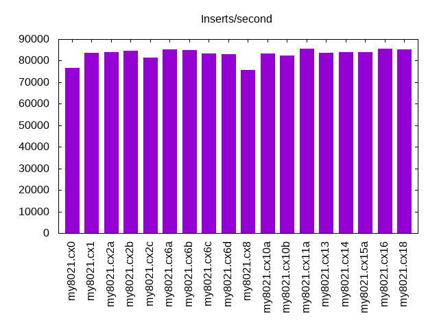
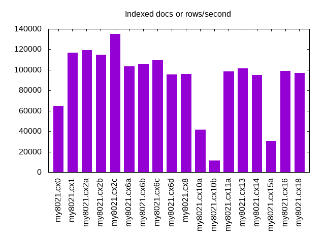
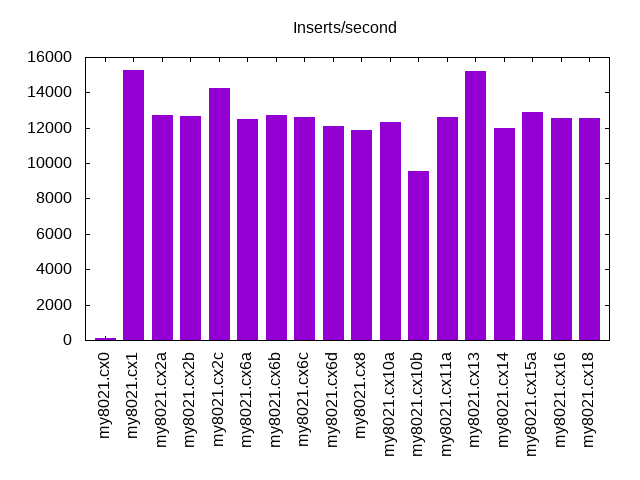
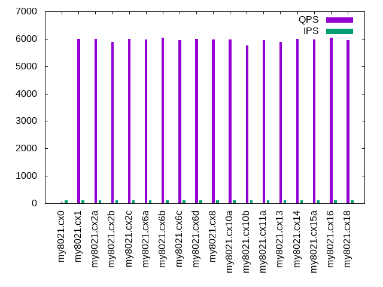
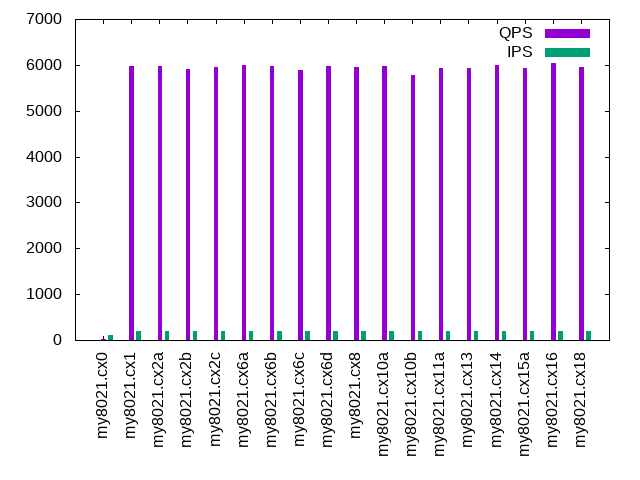
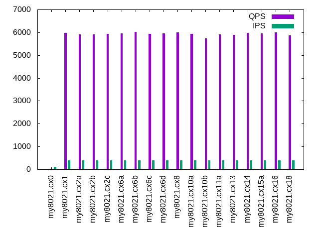
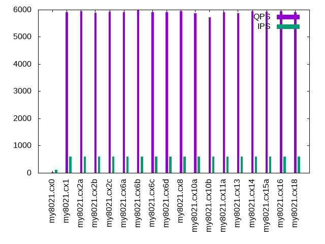
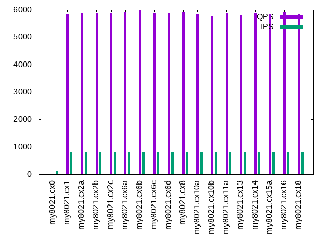
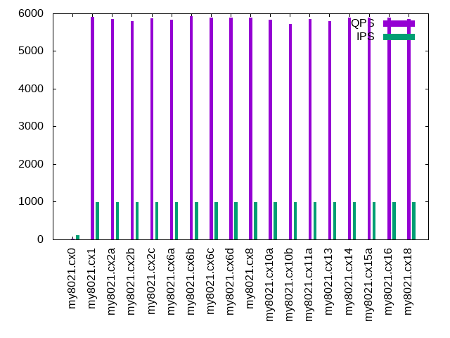

This is a report for the insert benchmark with 100M docs and 1 client(s). It is generated by scripts (bash, awk, sed) and Tufte might not be impressed. An overview of the insert benchmark is here and a short update is here. Below, by DBMS, I mean DBMS+version.config. An example is my8020.c10b40 where my means MySQL, 8020 is version 8.0.20 and c10b40 is the name for the configuration file.
The test server is described here. Clients and the DBMS shared the same host running Ubuntu 18.04.5. All tests used InnoDB with MySQL 8.0.21. The configurations for MySQL are here.
The numbers are inserts/s for l.i0 and l.i1, indexed docs (or rows) /s for l.x and queries/s for q*.2. The values are the average rate over the entire test for inserts (IPS) and queries (QPS). The range of values for IPS and QPS is split into 3 parts: bottom 25%, middle 50%, top 25%. Values in the bottom 25% have a red background, values in the top 25% have a green background and values in the middle have no color. A gray background is used for values that can be ignored because the DBMS did not sustain the target insert rate. Red backgrounds are not used when the minimum value is within 80% of the max value.
| dbms | l.i0 | l.x | l.i1 | q100.2 | q200.2 | q400.2 | q600.2 | q800.2 | q1000.2 |
|---|---|---|---|---|---|---|---|---|---|
| my8021.cx0 | 76628 | 64664 | 99 | 22 | 12 | 12 | 12 | 12 | 12 |
| my8021.cx1 | 83542 | 116803 | 15290 | 6002 | 5975 | 5966 | 5913 | 5852 | 5900 |
| my8021.cx2a | 83893 | 119451 | 12723 | 5989 | 5977 | 5917 | 5942 | 5878 | 5853 |
| my8021.cx2b | 84674 | 114794 | 12690 | 5887 | 5911 | 5906 | 5883 | 5862 | 5796 |
| my8021.cx2c | 81433 | 135270 | 14225 | 5986 | 5946 | 5927 | 5920 | 5860 | 5863 |
| my8021.cx6a | 85251 | 103196 | 12469 | 5973 | 6003 | 5963 | 5912 | 5926 | 5836 |
| my8021.cx6b | 84890 | 105702 | 12723 | 6046 | 5985 | 6016 | 5979 | 5992 | 5929 |
| my8021.cx6c | 83472 | 109279 | 12610 | 5962 | 5895 | 5941 | 5911 | 5871 | 5885 |
| my8021.cx6d | 83126 | 95424 | 12092 | 5994 | 5972 | 5957 | 5900 | 5876 | 5886 |
| my8021.cx8 | 75643 | 95789 | 11862 | 5980 | 5960 | 5993 | 5938 | 5918 | 5894 |
| my8021.cx10a | 83195 | 41674 | 12346 | 5980 | 5982 | 5923 | 5871 | 5837 | 5838 |
| my8021.cx10b | 82237 | 11423 | 9533 | 5757 | 5781 | 5736 | 5727 | 5752 | 5713 |
| my8021.cx11a | 85470 | 98234 | 12610 | 5944 | 5931 | 5911 | 5906 | 5869 | 5853 |
| my8021.cx13 | 83542 | 101418 | 15198 | 5880 | 5927 | 5878 | 5877 | 5821 | 5794 |
| my8021.cx14 | 83822 | 94882 | 11976 | 5989 | 5992 | 5975 | 5947 | 5887 | 5894 |
| my8021.cx15a | 83822 | 30042 | 12886 | 5981 | 5929 | 5953 | 5916 | 5836 | 5884 |
| my8021.cx16 | 85543 | 98718 | 12579 | 6037 | 6047 | 5992 | 5936 | 5914 | 5880 |
| my8021.cx18 | 85179 | 97184 | 12579 | 5949 | 5945 | 5869 | 5901 | 5840 | 5842 |
This lists the average rate of inserts/s for the tests that do inserts concurrent with queries. For such tests the query rate is listed in the table above. The read+write tests are setup so that the insert rate should match the target rate every second. Cells that are not at least 95% of the target have a red background to indicate a failure to satisfy the target.
| dbms | q100.2 | q200.2 | q400.2 | q600.2 | q800.2 | q1000.2 |
|---|---|---|---|---|---|---|
| my8021.cx0 | 100 | 103 | 103 | 103 | 103 | 103 |
| my8021.cx1 | 100 | 200 | 399 | 599 | 799 | 998 |
| my8021.cx2a | 100 | 200 | 399 | 599 | 799 | 998 |
| my8021.cx2b | 100 | 200 | 399 | 599 | 799 | 998 |
| my8021.cx2c | 100 | 200 | 399 | 599 | 799 | 998 |
| my8021.cx6a | 100 | 200 | 399 | 599 | 799 | 998 |
| my8021.cx6b | 100 | 200 | 399 | 599 | 799 | 999 |
| my8021.cx6c | 100 | 200 | 399 | 599 | 799 | 998 |
| my8021.cx6d | 100 | 200 | 399 | 599 | 799 | 999 |
| my8021.cx8 | 100 | 200 | 399 | 599 | 799 | 999 |
| my8021.cx10a | 100 | 200 | 399 | 599 | 799 | 998 |
| my8021.cx10b | 100 | 200 | 399 | 599 | 799 | 998 |
| my8021.cx11a | 100 | 200 | 399 | 599 | 799 | 998 |
| my8021.cx13 | 100 | 200 | 399 | 599 | 799 | 998 |
| my8021.cx14 | 100 | 200 | 399 | 599 | 799 | 998 |
| my8021.cx15a | 100 | 200 | 399 | 599 | 799 | 998 |
| my8021.cx16 | 100 | 200 | 399 | 599 | 799 | 998 |
| my8021.cx18 | 100 | 200 | 399 | 599 | 799 | 998 |
| target | 100 | 200 | 400 | 600 | 800 | 1000 |
l.i0: load without secondary indexes. Graphs for performance per 1-second interval are here.
Average throughput:
Insert response time histogram: each cell has the percentage of responses that take <= the time in the header and max is the max response time in seconds. For the max column values in the top 25% of the range have a red background and in the bottom 25% of the range have a green background. The red background is not used when the min value is within 80% of the max value.
| dbms | 256us | 1ms | 4ms | 16ms | 64ms | 256ms | 1s | 4s | 16s | gt | max |
|---|---|---|---|---|---|---|---|---|---|---|---|
| my8021.cx0 | 98.594 | 1.350 | 0.054 | 0.002 | 0.121 | ||||||
| my8021.cx1 | 99.561 | 0.407 | 0.030 | 0.002 | 0.116 | ||||||
| my8021.cx2a | 99.569 | 0.398 | 0.031 | 0.002 | 0.119 | ||||||
| my8021.cx2b | 99.581 | 0.385 | 0.032 | 0.002 | 0.126 | ||||||
| my8021.cx2c | 99.576 | 0.387 | 0.036 | 0.001 | 0.118 | ||||||
| my8021.cx6a | nonzero | 99.577 | 0.389 | 0.032 | 0.003 | 0.123 | |||||
| my8021.cx6b | 99.583 | 0.384 | 0.030 | 0.003 | 0.114 | ||||||
| my8021.cx6c | 99.571 | 0.395 | 0.032 | 0.002 | 0.117 | ||||||
| my8021.cx6d | 99.570 | 0.394 | 0.034 | 0.002 | 0.126 | ||||||
| my8021.cx8 | 99.550 | 0.415 | 0.036 | 0.047 | |||||||
| my8021.cx10a | 99.575 | 0.392 | 0.031 | 0.002 | 0.119 | ||||||
| my8021.cx10b | 99.568 | 0.403 | 0.027 | 0.002 | 0.116 | ||||||
| my8021.cx11a | nonzero | 99.583 | 0.384 | 0.030 | 0.003 | 0.121 | |||||
| my8021.cx13 | 99.575 | 0.390 | 0.033 | 0.002 | 0.130 | ||||||
| my8021.cx14 | 99.576 | 0.390 | 0.032 | 0.002 | 0.142 | ||||||
| my8021.cx15a | 99.583 | 0.384 | 0.031 | 0.002 | 0.123 | ||||||
| my8021.cx16 | 0.001 | 99.578 | 0.388 | 0.031 | 0.003 | 0.115 | |||||
| my8021.cx18 | 99.582 | 0.383 | 0.032 | 0.002 | 0.115 |
Performance metrics for the DBMS listed above. Some are normalized by throughput, others are not. Legend for results is here.
ips qps rps rkbps wkbps rpq rkbpq wkbpi csps cpups cspq cpupq dbgb1 dbgb2 rss maxop p50 p99 tag 76628 0 0 0 37321 0.000 0.000 0.487 20999 42.2 0.274 22 6.6 7.2 0.5 0.121 77228 64029 my8021.cx0 83542 0 0 0 34282 0.000 0.000 0.410 20036 43.0 0.240 21 6.6 16.1 7.7 0.116 84030 74219 my8021.cx1 83893 0 0 0 32448 0.000 0.000 0.387 19947 43.1 0.238 21 6.6 27.1 7.7 0.119 84507 73820 my8021.cx2a 84674 0 0 0 30633 0.000 0.000 0.362 19661 43.5 0.232 21 6.6 47.1 7.7 0.126 85168 74618 my8021.cx2b 81433 0 0 0 34991 0.000 0.000 0.430 20150 42.7 0.247 21 6.6 9.1 7.7 0.118 81924 72669 my8021.cx2c 85251 0 0 0 30818 0.000 0.000 0.362 19679 43.3 0.231 20 6.6 47.1 7.7 0.123 85807 74987 my8021.cx6a 84890 0 0 0 31028 0.000 0.000 0.366 19739 43.1 0.233 20 6.6 47.1 7.7 0.114 85416 75131 my8021.cx6b 83472 0 0 0 32140 0.000 0.000 0.385 19878 43.2 0.238 21 6.6 47.1 7.7 0.117 83988 73828 my8021.cx6c 83126 0 0 0 28796 0.000 0.000 0.346 19599 42.9 0.236 21 6.6 47.1 7.7 0.126 83633 73229 my8021.cx6d 75643 0 0 0 26331 0.000 0.000 0.348 18614 41.7 0.246 22 6.6 47.1 7.7 0.047 75963 71041 my8021.cx8 83195 0 0 0 28697 0.000 0.000 0.345 19929 43.3 0.240 21 6.6 47.2 8.4 0.119 83783 73264 my8021.cx10a 82237 0 0 0 28829 0.000 0.000 0.351 20822 43.0 0.253 21 6.8 47.4 9.8 0.116 82777 72584 my8021.cx10b 85470 0 0 0 29596 0.000 0.000 0.346 19553 43.1 0.229 20 6.6 47.1 7.7 0.121 86105 75345 my8021.cx11a 83542 0 0 0 26799 0.000 0.000 0.321 19610 43.0 0.235 21 6.6 47.1 7.7 0.130 84107 73672 my8021.cx13 83822 0 0 0 29047 0.000 0.000 0.347 19598 43.0 0.234 21 6.6 47.1 7.7 0.142 84348 73653 my8021.cx14 83822 0 0 0 31114 0.000 0.000 0.371 19890 43.0 0.237 21 6.6 47.1 7.7 0.123 84364 74319 my8021.cx15a 85543 0 0 0 29636 0.000 0.000 0.346 19462 43.4 0.228 20 6.6 47.1 7.7 0.115 86047 75851 my8021.cx16 85179 0 0 0 29503 0.000 0.000 0.346 19477 43.4 0.229 20 6.6 47.1 7.7 0.115 85706 75765 my8021.cx18
l.x: create secondary indexes.
Average throughput:
Performance metrics for the DBMS listed above. Some are normalized by throughput, others are not. Legend for results is here.
ips qps rps rkbps wkbps rpq rkbpq wkbpi csps cpups cspq cpupq dbgb1 dbgb2 rss maxop p50 p99 tag 64664 0 9 6710 69553 0.000 0.104 1.076 5455 20.9 0.084 13 14.7 15.3 0.5 0.024 NA NA my8021.cx0 116803 0 109 77847 124845 0.001 0.666 1.069 7166 23.0 0.061 8 14.7 24.2 11.1 0.015 NA NA my8021.cx1 119451 0 113 80680 131405 0.001 0.675 1.100 7738 23.7 0.065 8 14.7 35.2 10.3 0.013 NA NA my8021.cx2a 114794 0 108 77121 126443 0.001 0.672 1.101 7701 23.7 0.067 8 14.7 55.2 10.3 0.012 NA NA my8021.cx2b 135270 0 17 12077 146235 0.000 0.089 1.081 7976 24.4 0.059 7 14.7 17.2 11.1 0.020 NA NA my8021.cx2c 103196 0 96 68824 111434 0.001 0.667 1.080 6600 23.4 0.064 9 14.7 55.2 10.3 0.014 NA NA my8021.cx6a 105702 0 101 71129 113879 0.001 0.673 1.077 6729 23.6 0.064 9 14.7 55.2 10.3 0.016 NA NA my8021.cx6b 109279 0 102 72870 120159 0.001 0.667 1.100 7001 23.0 0.064 8 14.7 55.2 10.3 0.011 NA NA my8021.cx6c 95424 0 90 63887 101645 0.001 0.670 1.065 6150 23.2 0.064 10 14.7 55.2 10.3 0.018 NA NA my8021.cx6d 95789 0 89 63957 104496 0.001 0.668 1.091 6177 23.2 0.064 10 14.7 55.2 10.3 0.025 NA NA my8021.cx8 41674 0 39 27980 44684 0.001 0.671 1.072 5113 24.5 0.123 24 14.8 55.4 11.0 0.014 NA NA my8021.cx10a 11423 0 11 7731 12548 0.001 0.677 1.098 3022 25.0 0.265 88 15.2 55.7 12.5 0.020 NA NA my8021.cx10b 98234 0 93 66154 106051 0.001 0.673 1.080 6296 23.8 0.064 10 14.7 55.2 10.3 0.012 NA NA my8021.cx11a 101418 0 96 68239 101648 0.001 0.673 1.002 7145 26.1 0.070 10 14.7 55.2 11.0 0.015 NA NA my8021.cx13 94882 0 88 62842 103774 0.001 0.662 1.094 6080 23.5 0.064 10 14.7 55.2 10.3 0.017 NA NA my8021.cx14 30042 0 28 19997 32254 0.001 0.666 1.074 1662 24.7 0.055 33 14.7 55.2 10.3 0.013 NA NA my8021.cx15a 98718 0 93 65697 107400 0.001 0.666 1.088 6327 23.8 0.064 10 14.7 55.2 10.3 0.021 NA NA my8021.cx16 97184 0 92 64952 104018 0.001 0.668 1.070 6227 23.8 0.064 10 14.7 55.2 10.3 0.016 NA NA my8021.cx18
l.i1: continue load after secondary indexes created. Graphs for performance per 1-second interval are here.
Average throughput:
Insert response time histogram: each cell has the percentage of responses that take <= the time in the header and max is the max response time in seconds. For the max column values in the top 25% of the range have a red background and in the bottom 25% of the range have a green background. The red background is not used when the min value is within 80% of the max value.
| dbms | 256us | 1ms | 4ms | 16ms | 64ms | 256ms | 1s | 4s | 16s | gt | max |
|---|---|---|---|---|---|---|---|---|---|---|---|
| my8021.cx0 | 0.152 | 0.395 | 9.368 | 23.634 | 54.536 | 11.915 | 3.888 | ||||
| my8021.cx1 | 94.596 | 3.438 | 1.685 | 0.280 | 0.238 | ||||||
| my8021.cx2a | 93.990 | 3.216 | 1.972 | 0.822 | 0.001 | 0.282 | |||||
| my8021.cx2b | 94.256 | 2.837 | 1.998 | 0.910 | 0.224 | ||||||
| my8021.cx2c | 93.777 | 3.562 | 2.292 | 0.369 | 0.191 | ||||||
| my8021.cx6a | 94.224 | 2.869 | 1.948 | 0.959 | 0.233 | ||||||
| my8021.cx6b | 93.822 | 3.263 | 1.915 | 0.993 | 0.006 | 0.482 | |||||
| my8021.cx6c | 93.141 | 3.823 | 2.018 | 1.014 | 0.003 | 0.493 | |||||
| my8021.cx6d | 93.940 | 3.046 | 2.022 | 0.962 | 0.030 | 0.661 | |||||
| my8021.cx8 | 93.857 | 3.009 | 2.112 | 0.999 | 0.024 | 0.693 | |||||
| my8021.cx10a | 92.226 | 3.824 | 2.901 | 1.048 | 0.002 | 0.288 | |||||
| my8021.cx10b | 85.586 | 7.998 | 5.278 | 1.138 | 0.166 | ||||||
| my8021.cx11a | 94.099 | 3.051 | 1.895 | 0.955 | 0.239 | ||||||
| my8021.cx13 | 92.848 | 4.787 | 2.280 | 0.086 | 0.203 | ||||||
| my8021.cx14 | 94.336 | 2.847 | 1.679 | 1.137 | 0.001 | 0.270 | |||||
| my8021.cx15a | 93.881 | 3.131 | 2.088 | 0.899 | 0.001 | 0.323 | |||||
| my8021.cx16 | 94.054 | 3.063 | 1.942 | 0.942 | 0.237 | ||||||
| my8021.cx18 | 94.006 | 3.041 | 1.996 | 0.957 | 0.250 |
Performance metrics for the DBMS listed above. Some are normalized by throughput, others are not. Legend for results is here.
ips qps rps rkbps wkbps rpq rkbpq wkbpi csps cpups cspq cpupq dbgb1 dbgb2 rss maxop p50 p99 tag 99 0 2 40 11675 0.018 0.401 117.455 5366 7.6 53.984 3058 22.2 22.9 0.5 3.888 100 0 my8021.cx0 15290 0 768 12283 86507 0.050 0.803 5.658 19775 29.9 1.293 78 22.2 31.9 11.2 0.238 19828 450 my8021.cx1 12723 0 886 14175 66516 0.070 1.114 5.228 17921 29.2 1.409 92 22.2 42.9 11.1 0.282 19494 399 my8021.cx2a 12690 0 991 15859 54865 0.078 1.250 4.323 17024 29.0 1.342 91 22.2 62.8 11.1 0.224 19984 350 my8021.cx2b 14225 0 820 13114 100326 0.058 0.922 7.053 21141 30.2 1.486 85 22.2 24.9 11.2 0.191 19642 600 my8021.cx2c 12469 0 974 15588 61270 0.078 1.250 4.914 17699 29.0 1.419 93 22.2 62.8 11.1 0.233 19986 350 my8021.cx6a 12723 0 1056 16898 88123 0.083 1.328 6.927 20304 29.5 1.596 93 22.2 62.8 11.1 0.482 21431 300 my8021.cx6b 12610 0 1119 17897 115915 0.089 1.419 9.192 22850 29.9 1.812 95 22.2 62.8 11.1 0.493 17436 349 my8021.cx6c 12092 0 966 15455 67008 0.080 1.278 5.542 18321 28.5 1.515 94 22.2 62.8 11.1 0.661 19183 200 my8021.cx6d 11862 0 951 15221 64541 0.080 1.283 5.441 17979 28.0 1.516 94 22.2 62.8 11.1 0.693 19229 150 my8021.cx8 12346 0 1520 12159 52841 0.123 0.985 4.280 21139 28.7 1.712 93 21.6 62.2 11.8 0.288 4495 400 my8021.cx10a 9533 0 2146 8584 34381 0.225 0.900 3.607 23737 27.9 2.490 117 22.3 62.9 13.0 0.166 3299 400 my8021.cx10b 12610 0 1021 16334 72711 0.081 1.295 5.766 18867 29.2 1.496 93 22.2 62.8 11.0 0.239 20592 350 my8021.cx11a 15198 0 381 6096 52430 0.025 0.401 3.450 18777 29.5 1.236 78 22.2 62.8 11.1 0.203 19836 1449 my8021.cx13 11976 0 957 15312 66562 0.080 1.279 5.558 20506 29.0 1.712 97 22.2 62.8 11.1 0.270 19592 250 my8021.cx14 12886 0 1019 16306 79946 0.079 1.265 6.204 20672 29.0 1.604 90 22.2 62.8 11.2 0.323 21277 350 my8021.cx15a 12579 0 1006 16088 75447 0.080 1.279 5.998 19181 29.2 1.525 93 22.2 62.8 11.1 0.237 20727 350 my8021.cx16 12579 0 1008 16130 71915 0.080 1.282 5.717 18669 29.2 1.484 93 22.2 62.8 11.1 0.250 20776 350 my8021.cx18
q100.2: range queries with 100 insert/s per client, 2nd loop. Graphs for performance per 1-second interval are here.
Average throughput:
Query response time histogram: each cell has the percentage of responses that take <= the time in the header and max is the max response time in seconds. For max values in the top 25% of the range have a red background and in the bottom 25% of the range have a green background. The red background is not used when the min value is within 80% of the max value.
| dbms | 256us | 1ms | 4ms | 16ms | 64ms | 256ms | 1s | 4s | 16s | gt | max |
|---|---|---|---|---|---|---|---|---|---|---|---|
| my8021.cx0 | 0.007 | 0.832 | 28.196 | 5.853 | 41.910 | 22.523 | 0.679 | 0.559 | |||
| my8021.cx1 | 99.666 | 0.334 | nonzero | nonzero | 0.015 | ||||||
| my8021.cx2a | 99.648 | 0.352 | nonzero | nonzero | 0.005 | ||||||
| my8021.cx2b | 99.606 | 0.394 | nonzero | nonzero | nonzero | 0.016 | |||||
| my8021.cx2c | 99.645 | 0.355 | nonzero | nonzero | 0.016 | ||||||
| my8021.cx6a | 99.710 | 0.289 | nonzero | nonzero | 0.015 | ||||||
| my8021.cx6b | 99.707 | 0.292 | nonzero | nonzero | 0.017 | ||||||
| my8021.cx6c | 99.679 | 0.321 | nonzero | nonzero | 0.006 | ||||||
| my8021.cx6d | 99.662 | 0.338 | nonzero | nonzero | nonzero | 0.018 | |||||
| my8021.cx8 | 99.687 | 0.312 | nonzero | nonzero | 0.016 | ||||||
| my8021.cx10a | 99.688 | 0.311 | nonzero | nonzero | 0.006 | ||||||
| my8021.cx10b | 99.486 | 0.513 | nonzero | nonzero | nonzero | 0.018 | |||||
| my8021.cx11a | 99.656 | 0.344 | nonzero | nonzero | 0.005 | ||||||
| my8021.cx13 | 99.666 | 0.334 | nonzero | nonzero | 0.005 | ||||||
| my8021.cx14 | 99.691 | 0.309 | nonzero | nonzero | nonzero | 0.017 | |||||
| my8021.cx15a | 99.670 | 0.329 | nonzero | nonzero | 0.006 | ||||||
| my8021.cx16 | 99.698 | 0.301 | nonzero | nonzero | 0.015 | ||||||
| my8021.cx18 | 99.656 | 0.343 | nonzero | nonzero | 0.015 |
Insert response time histogram: each cell has the percentage of responses that take <= the time in the header and max is the max response time in seconds. For max values in the top 25% of the range have a red background and in the bottom 25% of the range have a green background. The red background is not used when the min value is within 80% of the max value.
| dbms | 256us | 1ms | 4ms | 16ms | 64ms | 256ms | 1s | 4s | 16s | gt | max |
|---|---|---|---|---|---|---|---|---|---|---|---|
| my8021.cx0 | 0.222 | 2.056 | 16.417 | 38.722 | 38.722 | 3.861 | 2.307 | ||||
| my8021.cx1 | 97.083 | 2.750 | 0.167 | 0.021 | |||||||
| my8021.cx2a | 96.833 | 2.972 | 0.194 | 0.021 | |||||||
| my8021.cx2b | 97.417 | 2.500 | 0.083 | 0.021 | |||||||
| my8021.cx2c | 97.111 | 2.833 | 0.056 | 0.023 | |||||||
| my8021.cx6a | 98.722 | 1.167 | 0.111 | 0.021 | |||||||
| my8021.cx6b | 99.639 | 0.361 | 0.014 | ||||||||
| my8021.cx6c | 99.722 | 0.278 | 0.010 | ||||||||
| my8021.cx6d | 99.194 | 0.528 | 0.278 | 0.021 | |||||||
| my8021.cx8 | 99.278 | 0.639 | 0.083 | 0.017 | |||||||
| my8021.cx10a | 99.639 | 0.333 | 0.028 | 0.024 | |||||||
| my8021.cx10b | 80.361 | 17.278 | 2.361 | 0.019 | |||||||
| my8021.cx11a | 99.111 | 0.889 | 0.012 | ||||||||
| my8021.cx13 | 99.194 | 0.806 | 0.011 | ||||||||
| my8021.cx14 | 98.889 | 1.000 | 0.111 | 0.018 | |||||||
| my8021.cx15a | 97.778 | 2.222 | 0.013 | ||||||||
| my8021.cx16 | 99.278 | 0.500 | 0.222 | 0.017 | |||||||
| my8021.cx18 | 99.083 | 0.694 | 0.222 | 0.024 |
Performance metrics for the DBMS listed above. Some are normalized by throughput, others are not. Legend for results is here.
ips qps rps rkbps wkbps rpq rkbpq wkbpi csps cpups cspq cpupq dbgb1 dbgb2 rss maxop p50 p99 tag 100 22 11 210 6863 0.475 9.319 68.911 5364 8.7 238.409 15467 22.3 22.9 0.5 0.559 16 0 my8021.cx0 100 6002 12 192 1569 0.002 0.032 15.720 24031 26.0 4.004 173 22.3 31.9 11.2 0.015 6009 5913 my8021.cx1 100 5989 12 191 1784 0.002 0.032 17.876 24006 26.0 4.008 174 22.3 42.9 11.1 0.005 5993 5898 my8021.cx2a 100 5887 12 193 2079 0.002 0.033 20.829 23638 26.0 4.015 177 22.3 62.8 11.1 0.016 5897 5786 my8021.cx2b 100 5986 12 191 1806 0.002 0.032 18.099 23988 25.9 4.008 173 22.3 24.9 11.2 0.016 5993 5897 my8021.cx2c 100 5973 12 193 444 0.002 0.032 4.446 23638 25.9 3.957 173 22.3 62.8 11.1 0.015 5977 5881 my8021.cx6a 100 6046 66 1052 2161 0.011 0.174 21.651 24074 26.0 3.982 172 22.3 62.8 11.1 0.017 6057 5962 my8021.cx6b 100 5962 66 1054 2166 0.011 0.177 21.706 23786 26.0 3.990 174 22.3 62.8 11.1 0.006 5962 5881 my8021.cx6c 100 5994 51 818 1726 0.009 0.137 17.293 23843 26.0 3.978 173 22.3 62.8 11.1 0.018 5999 5901 my8021.cx6d 100 5980 51 818 1724 0.009 0.137 17.271 23801 26.0 3.980 174 22.3 62.8 11.1 0.016 5979 5898 my8021.cx8 100 5980 50 401 767 0.008 0.067 7.681 23730 26.0 3.968 174 21.6 62.2 11.8 0.006 5980 5897 my8021.cx10a 100 5757 51 204 760 0.009 0.035 7.611 23245 25.9 4.038 180 22.4 62.9 13.0 0.018 5770 5658 my8021.cx10b 100 5944 51 820 1729 0.009 0.138 17.324 23662 26.0 3.981 175 22.3 62.8 11.0 0.005 5946 5850 my8021.cx11a 100 5880 51 820 900 0.009 0.139 9.016 23432 26.0 3.985 177 22.3 62.8 11.1 0.005 5882 5786 my8021.cx13 100 5989 51 819 1727 0.009 0.137 17.300 23921 26.0 3.994 174 22.3 62.8 11.1 0.017 5994 5900 my8021.cx14 100 5981 51 816 1812 0.009 0.136 18.160 24026 26.0 4.017 174 22.3 62.8 11.2 0.006 5993 5897 my8021.cx15a 100 6037 51 818 1717 0.008 0.135 17.202 24005 26.0 3.976 172 22.3 62.8 11.1 0.015 6041 5946 my8021.cx16 100 5949 51 819 1725 0.009 0.138 17.286 23667 26.0 3.978 175 22.3 62.8 11.1 0.015 5950 5850 my8021.cx18
q200.2: range queries with 200 insert/s per client, 2nd loop. Graphs for performance per 1-second interval are here.
Average throughput:
Query response time histogram: each cell has the percentage of responses that take <= the time in the header and max is the max response time in seconds. For max values in the top 25% of the range have a red background and in the bottom 25% of the range have a green background. The red background is not used when the min value is within 80% of the max value.
| dbms | 256us | 1ms | 4ms | 16ms | 64ms | 256ms | 1s | 4s | 16s | gt | max |
|---|---|---|---|---|---|---|---|---|---|---|---|
| my8021.cx0 | 0.007 | 0.439 | 8.745 | 1.487 | 32.946 | 54.123 | 2.254 | 0.915 | |||
| my8021.cx1 | 99.596 | 0.404 | nonzero | nonzero | 0.011 | ||||||
| my8021.cx2a | 99.590 | 0.410 | nonzero | nonzero | 0.005 | ||||||
| my8021.cx2b | 99.580 | 0.420 | nonzero | nonzero | 0.010 | ||||||
| my8021.cx2c | 99.600 | 0.399 | nonzero | nonzero | 0.009 | ||||||
| my8021.cx6a | 99.669 | 0.331 | nonzero | nonzero | nonzero | 0.017 | |||||
| my8021.cx6b | 99.631 | 0.368 | 0.001 | nonzero | nonzero | 0.017 | |||||
| my8021.cx6c | 99.587 | 0.412 | 0.001 | nonzero | nonzero | 0.018 | |||||
| my8021.cx6d | 99.623 | 0.377 | nonzero | nonzero | 0.006 | ||||||
| my8021.cx8 | 99.632 | 0.367 | nonzero | nonzero | 0.016 | ||||||
| my8021.cx10a | 99.654 | 0.346 | nonzero | nonzero | 0.006 | ||||||
| my8021.cx10b | 99.482 | 0.518 | nonzero | nonzero | 0.005 | ||||||
| my8021.cx11a | 99.582 | 0.418 | nonzero | nonzero | 0.016 | ||||||
| my8021.cx13 | 99.647 | 0.352 | nonzero | nonzero | 0.008 | ||||||
| my8021.cx14 | 99.656 | 0.343 | nonzero | nonzero | 0.004 | ||||||
| my8021.cx15a | 99.595 | 0.405 | nonzero | nonzero | 0.006 | ||||||
| my8021.cx16 | 99.660 | 0.340 | nonzero | nonzero | nonzero | 0.017 | |||||
| my8021.cx18 | 99.624 | 0.375 | nonzero | nonzero | 0.010 |
Insert response time histogram: each cell has the percentage of responses that take <= the time in the header and max is the max response time in seconds. For max values in the top 25% of the range have a red background and in the bottom 25% of the range have a green background. The red background is not used when the min value is within 80% of the max value.
| dbms | 256us | 1ms | 4ms | 16ms | 64ms | 256ms | 1s | 4s | 16s | gt | max |
|---|---|---|---|---|---|---|---|---|---|---|---|
| my8021.cx0 | 0.153 | 0.917 | 6.764 | 25.944 | 55.847 | 10.375 | 2.682 | ||||
| my8021.cx1 | 94.111 | 5.361 | 0.528 | 0.019 | |||||||
| my8021.cx2a | 93.750 | 5.931 | 0.319 | 0.019 | |||||||
| my8021.cx2b | 93.194 | 6.625 | 0.181 | 0.017 | |||||||
| my8021.cx2c | 93.347 | 6.500 | 0.153 | 0.018 | |||||||
| my8021.cx6a | 94.917 | 4.639 | 0.444 | 0.021 | |||||||
| my8021.cx6b | 99.556 | 0.417 | 0.028 | 0.021 | |||||||
| my8021.cx6c | 99.722 | 0.208 | 0.069 | 0.021 | |||||||
| my8021.cx6d | 96.653 | 3.194 | 0.153 | 0.021 | |||||||
| my8021.cx8 | 96.153 | 3.528 | 0.319 | 0.019 | |||||||
| my8021.cx10a | 96.056 | 3.569 | 0.375 | 0.021 | |||||||
| my8021.cx10b | 85.708 | 13.111 | 1.181 | 0.021 | |||||||
| my8021.cx11a | 95.708 | 3.083 | 1.208 | 0.021 | |||||||
| my8021.cx13 | 96.333 | 3.514 | 0.153 | 0.018 | |||||||
| my8021.cx14 | 96.194 | 3.806 | 0.010 | ||||||||
| my8021.cx15a | 95.236 | 4.764 | 0.013 | ||||||||
| my8021.cx16 | 95.931 | 2.944 | 1.125 | 0.024 | |||||||
| my8021.cx18 | 95.903 | 3.806 | 0.292 | 0.019 |
Performance metrics for the DBMS listed above. Some are normalized by throughput, others are not. Legend for results is here.
ips qps rps rkbps wkbps rpq rkbpq wkbpi csps cpups cspq cpupq dbgb1 dbgb2 rss maxop p50 p99 tag 103 12 4 72 6914 0.307 5.989 67.126 5695 8.6 470.682 28430 22.3 23.0 0.5 0.915 16 0 my8021.cx0 200 5975 13 211 2658 0.002 0.035 13.316 24073 26.2 4.029 175 22.3 31.9 11.2 0.011 5978 5881 my8021.cx1 200 5977 13 211 2534 0.002 0.035 12.694 24066 26.2 4.027 175 22.3 42.9 11.1 0.005 5978 5882 my8021.cx2a 200 5911 13 211 2522 0.002 0.036 12.637 23812 26.1 4.028 177 22.3 62.9 11.1 0.010 5914 5818 my8021.cx2b 200 5946 13 211 4329 0.002 0.035 21.689 24115 26.2 4.056 176 22.3 24.9 11.2 0.009 5946 5865 my8021.cx2c 200 6003 13 212 588 0.002 0.035 2.946 23833 26.2 3.970 175 22.3 62.9 11.1 0.017 6010 5754 my8021.cx6a 200 5985 124 1981 4136 0.021 0.331 20.719 24141 26.2 4.034 175 22.3 62.9 11.1 0.017 5993 5897 my8021.cx6b 200 5895 131 2098 4310 0.022 0.356 21.596 23827 26.2 4.042 178 22.3 62.9 11.1 0.018 5898 5802 my8021.cx6c 200 5972 53 843 1819 0.009 0.141 9.111 23795 26.1 3.984 175 22.3 62.9 11.1 0.006 5977 5882 my8021.cx6d 200 5960 53 844 1823 0.009 0.142 9.131 23773 26.2 3.989 176 22.3 62.9 11.1 0.016 5962 5866 my8021.cx8 200 5982 52 412 965 0.009 0.069 4.832 23803 26.2 3.979 175 21.7 62.3 11.8 0.006 5993 5897 my8021.cx10a 200 5781 52 207 810 0.009 0.036 4.059 23399 26.1 4.047 181 22.5 63.0 13.0 0.005 5786 5674 my8021.cx10b 200 5931 53 846 1822 0.009 0.143 9.129 23642 26.1 3.986 176 22.3 62.9 11.0 0.016 5934 5818 my8021.cx11a 200 5927 53 843 959 0.009 0.142 4.805 23644 26.1 3.989 176 22.3 62.9 11.1 0.008 5930 5833 my8021.cx13 200 5992 53 842 1814 0.009 0.141 9.087 23974 26.2 4.001 175 22.3 62.9 11.1 0.004 5994 5898 my8021.cx14 200 5929 52 841 1952 0.009 0.142 9.778 23871 26.1 4.026 176 22.3 62.9 11.2 0.006 5930 5834 my8021.cx15a 200 6047 53 842 1816 0.009 0.139 9.099 24091 26.2 3.984 173 22.3 62.9 11.1 0.017 6057 5961 my8021.cx16 200 5945 53 844 1827 0.009 0.142 9.153 23739 26.2 3.993 176 22.3 62.9 11.1 0.010 5946 5850 my8021.cx18
q400.2: range queries with 400 insert/s per client, 2nd loop. Graphs for performance per 1-second interval are here.
Average throughput:
Query response time histogram: each cell has the percentage of responses that take <= the time in the header and max is the max response time in seconds. For max values in the top 25% of the range have a red background and in the bottom 25% of the range have a green background. The red background is not used when the min value is within 80% of the max value.
| dbms | 256us | 1ms | 4ms | 16ms | 64ms | 256ms | 1s | 4s | 16s | gt | max |
|---|---|---|---|---|---|---|---|---|---|---|---|
| my8021.cx0 | 0.001 | 0.333 | 9.212 | 1.313 | 33.855 | 53.270 | 2.016 | 0.890 | |||
| my8021.cx1 | 99.481 | 0.518 | 0.001 | nonzero | 0.006 | ||||||
| my8021.cx2a | 99.457 | 0.542 | 0.001 | nonzero | 0.009 | ||||||
| my8021.cx2b | 99.467 | 0.532 | 0.001 | nonzero | 0.005 | ||||||
| my8021.cx2c | 99.461 | 0.538 | 0.001 | nonzero | 0.009 | ||||||
| my8021.cx6a | 99.491 | 0.508 | 0.001 | nonzero | 0.008 | ||||||
| my8021.cx6b | 99.530 | 0.469 | 0.001 | nonzero | 0.005 | ||||||
| my8021.cx6c | 99.482 | 0.517 | 0.001 | nonzero | 0.009 | ||||||
| my8021.cx6d | 99.461 | 0.538 | 0.001 | nonzero | nonzero | 0.016 | |||||
| my8021.cx8 | 99.491 | 0.508 | 0.001 | nonzero | 0.008 | ||||||
| my8021.cx10a | 99.428 | 0.571 | 0.001 | nonzero | 0.014 | ||||||
| my8021.cx10b | 99.277 | 0.722 | 0.001 | nonzero | 0.015 | ||||||
| my8021.cx11a | 99.465 | 0.534 | 0.001 | nonzero | nonzero | 0.016 | |||||
| my8021.cx13 | 99.495 | 0.504 | 0.001 | nonzero | nonzero | 0.016 | |||||
| my8021.cx14 | 99.516 | 0.483 | 0.001 | nonzero | nonzero | 0.016 | |||||
| my8021.cx15a | 99.515 | 0.484 | 0.001 | nonzero | 0.006 | ||||||
| my8021.cx16 | 99.523 | 0.476 | 0.001 | nonzero | 0.008 | ||||||
| my8021.cx18 | 99.447 | 0.552 | 0.001 | nonzero | nonzero | 0.016 |
Insert response time histogram: each cell has the percentage of responses that take <= the time in the header and max is the max response time in seconds. For max values in the top 25% of the range have a red background and in the bottom 25% of the range have a green background. The red background is not used when the min value is within 80% of the max value.
| dbms | 256us | 1ms | 4ms | 16ms | 64ms | 256ms | 1s | 4s | 16s | gt | max |
|---|---|---|---|---|---|---|---|---|---|---|---|
| my8021.cx0 | 0.125 | 0.778 | 7.674 | 26.271 | 54.174 | 10.979 | 2.782 | ||||
| my8021.cx1 | 92.681 | 7.257 | 0.062 | 0.019 | |||||||
| my8021.cx2a | 92.604 | 7.181 | 0.215 | 0.019 | |||||||
| my8021.cx2b | 92.569 | 7.347 | 0.083 | 0.022 | |||||||
| my8021.cx2c | 92.438 | 7.465 | 0.097 | 0.020 | |||||||
| my8021.cx6a | 92.361 | 7.597 | 0.042 | 0.017 | |||||||
| my8021.cx6b | 97.993 | 2.007 | 0.013 | ||||||||
| my8021.cx6c | 99.569 | 0.431 | 0.013 | ||||||||
| my8021.cx6d | 94.479 | 4.056 | 1.465 | 0.021 | |||||||
| my8021.cx8 | 93.840 | 5.931 | 0.229 | 0.022 | |||||||
| my8021.cx10a | 97.354 | 2.625 | 0.021 | 0.019 | |||||||
| my8021.cx10b | 88.590 | 9.875 | 1.535 | 0.024 | |||||||
| my8021.cx11a | 93.965 | 4.694 | 1.340 | 0.021 | |||||||
| my8021.cx13 | 94.792 | 4.035 | 1.174 | 0.019 | |||||||
| my8021.cx14 | 94.715 | 4.722 | 0.562 | 0.020 | |||||||
| my8021.cx15a | 95.333 | 4.549 | 0.118 | 0.021 | |||||||
| my8021.cx16 | 96.042 | 3.917 | 0.042 | 0.022 | |||||||
| my8021.cx18 | 94.701 | 5.139 | 0.160 | 0.017 |
Performance metrics for the DBMS listed above. Some are normalized by throughput, others are not. Legend for results is here.
ips qps rps rkbps wkbps rpq rkbpq wkbpi csps cpups cspq cpupq dbgb1 dbgb2 rss maxop p50 p99 tag 103 12 1 24 6941 0.106 1.950 67.195 5724 8.7 461.598 28064 22.4 23.1 0.4 0.890 16 0 my8021.cx0 399 5966 15 240 2977 0.003 0.040 7.455 24176 26.5 4.053 178 22.4 32.0 11.2 0.006 5977 5881 my8021.cx1 399 5917 15 241 2955 0.003 0.041 7.400 23995 26.5 4.055 179 22.4 43.0 11.1 0.009 5918 5818 my8021.cx2a 399 5906 15 243 2959 0.003 0.041 7.410 23952 26.5 4.056 179 22.4 63.0 11.1 0.005 5913 5818 my8021.cx2b 399 5927 15 241 6368 0.003 0.041 15.949 24348 26.6 4.108 180 22.4 25.0 11.2 0.009 5930 5822 my8021.cx2c 399 5963 15 242 1689 0.003 0.041 4.229 24051 26.5 4.033 178 22.4 63.0 11.1 0.008 5967 5881 my8021.cx6a 399 6016 128 2040 4364 0.021 0.339 10.928 24328 26.6 4.044 177 22.4 63.0 11.1 0.005 6025 5930 my8021.cx6b 399 5941 245 3920 8162 0.041 0.660 20.440 24536 26.8 4.130 180 22.4 63.0 11.1 0.009 5945 5853 my8021.cx6c 399 5957 54 863 2668 0.009 0.145 6.683 24039 26.5 4.035 178 22.4 63.0 11.1 0.016 5962 5865 my8021.cx6d 399 5993 54 865 2872 0.009 0.144 7.193 24258 26.6 4.048 178 22.4 63.0 11.1 0.008 5994 5898 my8021.cx8 399 5923 52 417 1864 0.009 0.070 4.669 24033 26.6 4.057 180 21.9 62.4 11.8 0.014 5930 5770 my8021.cx10a 399 5736 55 221 1117 0.010 0.038 2.796 23412 26.5 4.082 185 22.6 63.2 13.0 0.015 5738 5626 my8021.cx10b 399 5911 54 865 2271 0.009 0.146 5.688 23776 26.5 4.022 179 22.4 63.0 11.0 0.016 5914 5818 my8021.cx11a 399 5878 54 864 1082 0.009 0.147 2.711 23572 26.4 4.010 180 22.4 63.0 11.1 0.016 5882 5788 my8021.cx13 399 5975 54 864 2663 0.009 0.145 6.668 24223 26.6 4.054 178 22.4 63.0 11.1 0.016 5978 5882 my8021.cx14 399 5953 54 860 2254 0.009 0.145 5.644 24077 26.5 4.044 178 22.4 63.0 11.2 0.006 5961 5866 my8021.cx15a 399 5992 54 861 1973 0.009 0.144 4.942 23959 26.5 3.999 177 22.4 63.0 11.1 0.008 5994 5898 my8021.cx16 399 5869 54 864 2209 0.009 0.147 5.533 23595 26.4 4.020 180 22.4 63.0 11.1 0.016 5881 5773 my8021.cx18
q600.2: range queries with 600 insert/s per client, 2nd loop. Graphs for performance per 1-second interval are here.
Average throughput:
Query response time histogram: each cell has the percentage of responses that take <= the time in the header and max is the max response time in seconds. For max values in the top 25% of the range have a red background and in the bottom 25% of the range have a green background. The red background is not used when the min value is within 80% of the max value.
| dbms | 256us | 1ms | 4ms | 16ms | 64ms | 256ms | 1s | 4s | 16s | gt | max |
|---|---|---|---|---|---|---|---|---|---|---|---|
| my8021.cx0 | 0.002 | 0.283 | 9.165 | 1.177 | 34.181 | 53.065 | 2.127 | 0.787 | |||
| my8021.cx1 | 99.343 | 0.656 | 0.001 | nonzero | nonzero | 0.018 | |||||
| my8021.cx2a | 99.355 | 0.644 | 0.001 | nonzero | 0.007 | ||||||
| my8021.cx2b | 99.320 | 0.679 | 0.001 | nonzero | 0.006 | ||||||
| my8021.cx2c | 99.329 | 0.670 | 0.001 | nonzero | 0.007 | ||||||
| my8021.cx6a | 99.357 | 0.642 | 0.001 | nonzero | nonzero | 0.017 | |||||
| my8021.cx6b | 99.415 | 0.583 | 0.001 | nonzero | 0.006 | ||||||
| my8021.cx6c | 99.377 | 0.621 | 0.002 | nonzero | nonzero | 0.017 | |||||
| my8021.cx6d | 99.351 | 0.648 | 0.001 | nonzero | 0.005 | ||||||
| my8021.cx8 | 99.370 | 0.629 | 0.001 | nonzero | nonzero | 0.018 | |||||
| my8021.cx10a | 99.284 | 0.715 | 0.001 | nonzero | 0.006 | ||||||
| my8021.cx10b | 99.180 | 0.819 | 0.001 | nonzero | 0.014 | ||||||
| my8021.cx11a | 99.354 | 0.645 | 0.001 | nonzero | 0.008 | ||||||
| my8021.cx13 | 99.377 | 0.622 | 0.002 | nonzero | nonzero | 0.021 | |||||
| my8021.cx14 | 99.417 | 0.582 | 0.001 | nonzero | nonzero | 0.017 | |||||
| my8021.cx15a | 99.400 | 0.599 | 0.001 | nonzero | 0.016 | ||||||
| my8021.cx16 | 99.366 | 0.633 | 0.001 | nonzero | 0.010 | ||||||
| my8021.cx18 | 99.364 | 0.634 | 0.001 | nonzero | nonzero | 0.017 |
Insert response time histogram: each cell has the percentage of responses that take <= the time in the header and max is the max response time in seconds. For max values in the top 25% of the range have a red background and in the bottom 25% of the range have a green background. The red background is not used when the min value is within 80% of the max value.
| dbms | 256us | 1ms | 4ms | 16ms | 64ms | 256ms | 1s | 4s | 16s | gt | max |
|---|---|---|---|---|---|---|---|---|---|---|---|
| my8021.cx0 | 0.134 | 0.838 | 7.389 | 25.958 | 54.949 | 10.731 | 3.489 | ||||
| my8021.cx1 | 93.810 | 5.954 | 0.236 | 0.018 | |||||||
| my8021.cx2a | 93.704 | 6.088 | 0.208 | 0.022 | |||||||
| my8021.cx2b | 93.449 | 6.319 | 0.231 | 0.021 | |||||||
| my8021.cx2c | 93.972 | 6.009 | 0.019 | 0.019 | |||||||
| my8021.cx6a | 93.648 | 6.236 | 0.116 | 0.022 | |||||||
| my8021.cx6b | 97.023 | 2.977 | 0.013 | ||||||||
| my8021.cx6c | 98.630 | 1.241 | 0.130 | 0.021 | |||||||
| my8021.cx6d | 94.287 | 5.713 | 0.013 | ||||||||
| my8021.cx8 | 94.037 | 3.519 | 2.444 | 0.023 | |||||||
| my8021.cx10a | 93.338 | 6.519 | 0.144 | 0.024 | |||||||
| my8021.cx10b | 92.366 | 6.806 | 0.829 | 0.024 | |||||||
| my8021.cx11a | 94.319 | 5.681 | 0.013 | ||||||||
| my8021.cx13 | 93.144 | 3.917 | 2.940 | 0.023 | |||||||
| my8021.cx14 | 94.787 | 3.630 | 1.583 | 0.023 | |||||||
| my8021.cx15a | 94.634 | 4.667 | 0.699 | 0.023 | |||||||
| my8021.cx16 | 94.097 | 5.880 | 0.023 | 0.018 | |||||||
| my8021.cx18 | 93.773 | 3.769 | 2.458 | 0.024 |
Performance metrics for the DBMS listed above. Some are normalized by throughput, others are not. Legend for results is here.
ips qps rps rkbps wkbps rpq rkbpq wkbpi csps cpups cspq cpupq dbgb1 dbgb2 rss maxop p50 p99 tag 103 12 1 11 6924 0.052 0.871 67.093 5709 8.7 460.433 28065 22.5 23.2 0.4 0.787 16 0 my8021.cx0 599 5913 16 255 4072 0.003 0.043 6.798 24177 26.8 4.089 181 22.6 32.2 11.2 0.018 5914 5818 my8021.cx1 599 5942 16 254 3230 0.003 0.043 5.392 24236 26.8 4.079 180 22.6 43.2 11.1 0.007 5946 5834 my8021.cx2a 599 5883 16 255 3274 0.003 0.043 5.466 24008 26.8 4.081 182 22.5 63.1 11.1 0.006 5882 5786 my8021.cx2b 599 5920 16 256 8183 0.003 0.043 13.662 24597 26.8 4.155 181 22.6 25.2 11.2 0.007 5929 5834 my8021.cx2c 599 5912 16 253 1201 0.003 0.043 2.005 23745 26.7 4.016 181 22.6 63.1 11.1 0.017 5914 5818 my8021.cx6a 599 5979 129 2058 4509 0.022 0.344 7.528 24254 26.8 4.057 179 22.6 63.1 11.1 0.006 5978 5897 my8021.cx6b 599 5911 251 4015 8464 0.042 0.679 14.131 24490 26.9 4.143 182 22.6 63.1 11.1 0.017 5914 5818 my8021.cx6c 599 5900 55 874 2629 0.009 0.148 4.388 23905 26.7 4.052 181 22.6 63.1 11.1 0.005 5900 5802 my8021.cx6d 599 5938 55 874 2563 0.009 0.147 4.280 24014 26.7 4.044 180 22.5 63.1 11.1 0.018 5945 5834 my8021.cx8 599 5871 55 442 2439 0.009 0.075 4.073 24022 26.8 4.092 183 22.5 63.1 11.8 0.006 5881 5786 my8021.cx10a 599 5727 55 218 1342 0.010 0.038 2.240 23531 26.7 4.109 186 22.9 63.4 13.0 0.014 5738 5626 my8021.cx10b 599 5906 55 878 2636 0.009 0.149 4.401 23924 26.7 4.051 181 22.6 63.1 11.0 0.008 5913 5803 my8021.cx11a 599 5877 55 874 1414 0.009 0.149 2.361 23709 26.7 4.034 182 22.5 63.1 11.1 0.021 5882 5770 my8021.cx13 599 5947 55 874 2668 0.009 0.147 4.454 24169 26.8 4.064 180 22.6 63.1 11.1 0.017 5946 5852 my8021.cx14 599 5916 54 870 2606 0.009 0.147 4.351 24069 26.8 4.069 181 22.5 63.1 11.2 0.016 5914 5818 my8021.cx15a 599 5936 55 874 2738 0.009 0.147 4.568 24073 26.8 4.056 181 22.6 63.1 11.1 0.010 5935 5849 my8021.cx16 599 5901 55 874 2624 0.009 0.148 4.380 23863 26.7 4.044 181 22.6 63.1 11.1 0.017 5913 5802 my8021.cx18
q800.2: range queries with 800 insert/s per client, 2nd loop. Graphs for performance per 1-second interval are here.
Average throughput:
Query response time histogram: each cell has the percentage of responses that take <= the time in the header and max is the max response time in seconds. For max values in the top 25% of the range have a red background and in the bottom 25% of the range have a green background. The red background is not used when the min value is within 80% of the max value.
| dbms | 256us | 1ms | 4ms | 16ms | 64ms | 256ms | 1s | 4s | 16s | gt | max |
|---|---|---|---|---|---|---|---|---|---|---|---|
| my8021.cx0 | 0.004 | 0.342 | 9.633 | 1.262 | 34.083 | 52.598 | 2.077 | 0.870 | |||
| my8021.cx1 | 99.127 | 0.871 | 0.002 | nonzero | 0.014 | ||||||
| my8021.cx2a | 99.170 | 0.829 | 0.002 | nonzero | nonzero | 0.017 | |||||
| my8021.cx2b | 99.181 | 0.817 | 0.002 | nonzero | 0.015 | ||||||
| my8021.cx2c | 99.113 | 0.885 | 0.001 | nonzero | 0.011 | ||||||
| my8021.cx6a | 99.243 | 0.756 | 0.002 | nonzero | nonzero | 0.017 | |||||
| my8021.cx6b | 99.288 | 0.710 | 0.002 | nonzero | nonzero | 0.017 | |||||
| my8021.cx6c | 99.222 | 0.775 | 0.002 | nonzero | nonzero | 0.016 | |||||
| my8021.cx6d | 99.207 | 0.791 | 0.002 | nonzero | nonzero | 0.016 | |||||
| my8021.cx8 | 99.248 | 0.750 | 0.002 | nonzero | nonzero | 0.016 | |||||
| my8021.cx10a | 99.161 | 0.837 | 0.002 | nonzero | 0.014 | ||||||
| my8021.cx10b | 99.107 | 0.891 | 0.002 | nonzero | 0.009 | ||||||
| my8021.cx11a | 99.221 | 0.777 | 0.002 | nonzero | 0.008 | ||||||
| my8021.cx13 | 99.123 | 0.875 | 0.002 | nonzero | nonzero | 0.017 | |||||
| my8021.cx14 | 99.221 | 0.778 | 0.001 | nonzero | 0.008 | ||||||
| my8021.cx15a | 99.177 | 0.821 | 0.002 | nonzero | nonzero | 0.017 | |||||
| my8021.cx16 | 99.218 | 0.780 | 0.002 | nonzero | 0.005 | ||||||
| my8021.cx18 | 99.154 | 0.844 | 0.002 | nonzero | nonzero | 0.018 |
Insert response time histogram: each cell has the percentage of responses that take <= the time in the header and max is the max response time in seconds. For max values in the top 25% of the range have a red background and in the bottom 25% of the range have a green background. The red background is not used when the min value is within 80% of the max value.
| dbms | 256us | 1ms | 4ms | 16ms | 64ms | 256ms | 1s | 4s | 16s | gt | max |
|---|---|---|---|---|---|---|---|---|---|---|---|
| my8021.cx0 | 0.087 | 0.903 | 7.281 | 25.878 | 55.316 | 10.535 | 2.755 | ||||
| my8021.cx1 | 94.410 | 5.358 | 0.233 | 0.041 | |||||||
| my8021.cx2a | 93.785 | 5.403 | 0.812 | 0.040 | |||||||
| my8021.cx2b | 93.622 | 5.601 | 0.778 | 0.041 | |||||||
| my8021.cx2c | 94.764 | 5.167 | 0.069 | 0.036 | |||||||
| my8021.cx6a | 93.267 | 5.201 | 1.531 | 0.049 | |||||||
| my8021.cx6b | 96.007 | 3.587 | 0.406 | 0.021 | |||||||
| my8021.cx6c | 97.361 | 2.583 | 0.056 | 0.021 | |||||||
| my8021.cx6d | 94.757 | 4.566 | 0.677 | 0.025 | |||||||
| my8021.cx8 | 94.434 | 4.243 | 1.323 | 0.024 | |||||||
| my8021.cx10a | 93.132 | 5.594 | 1.274 | 0.024 | |||||||
| my8021.cx10b | 95.830 | 3.858 | 0.312 | 0.023 | |||||||
| my8021.cx11a | 94.858 | 5.142 | 0.013 | ||||||||
| my8021.cx13 | 94.562 | 4.788 | 0.649 | 0.021 | |||||||
| my8021.cx14 | 95.090 | 4.910 | 0.016 | ||||||||
| my8021.cx15a | 95.014 | 4.101 | 0.885 | 0.022 | |||||||
| my8021.cx16 | 95.198 | 4.799 | 0.003 | 0.017 | |||||||
| my8021.cx18 | 94.340 | 4.368 | 1.292 | 0.024 |
Performance metrics for the DBMS listed above. Some are normalized by throughput, others are not. Legend for results is here.
ips qps rps rkbps wkbps rpq rkbpq wkbpi csps cpups cspq cpupq dbgb1 dbgb2 rss maxop p50 p99 tag 103 12 0 9 6938 0.042 0.689 67.290 5719 8.7 457.559 27840 22.7 23.4 0.4 0.870 16 0 my8021.cx0 799 5852 17 276 5609 0.003 0.047 7.023 24191 27.1 4.134 185 22.7 32.6 11.2 0.014 5855 5754 my8021.cx1 799 5878 17 273 3786 0.003 0.046 4.741 24116 27.1 4.103 184 22.7 43.6 11.1 0.017 5882 5786 my8021.cx2a 799 5862 17 272 3782 0.003 0.046 4.736 24054 27.1 4.103 185 22.7 63.6 11.1 0.015 5866 5754 my8021.cx2b 799 5860 17 273 10191 0.003 0.047 12.761 24667 27.2 4.209 186 22.7 25.6 11.2 0.011 5866 5770 my8021.cx2c 799 5926 17 275 1740 0.003 0.046 2.179 23974 27.0 4.046 182 22.7 63.6 11.1 0.017 5930 5834 my8021.cx6a 799 5992 129 2069 6504 0.022 0.345 8.140 24766 27.0 4.134 180 22.7 63.3 11.1 0.017 5994 5897 my8021.cx6b 799 5871 252 4033 10165 0.043 0.687 12.729 24635 27.1 4.196 185 22.7 63.3 11.1 0.016 5881 5786 my8021.cx6c 799 5876 55 883 2971 0.009 0.150 3.720 24013 27.0 4.086 184 22.7 63.3 11.1 0.016 5881 5786 my8021.cx6d 799 5918 55 883 2997 0.009 0.149 3.752 24193 27.0 4.088 182 22.7 63.3 11.1 0.016 5929 5817 my8021.cx8 799 5837 59 473 4144 0.010 0.081 5.189 24235 27.1 4.152 186 23.2 63.8 11.8 0.014 5834 5738 my8021.cx10a 799 5752 53 211 1323 0.009 0.037 1.657 23642 26.9 4.110 187 23.1 63.7 13.0 0.009 5754 5642 my8021.cx10b 799 5869 56 889 3050 0.009 0.151 3.819 24031 27.0 4.094 184 22.7 63.3 11.0 0.008 5881 5770 my8021.cx11a 799 5821 55 886 1800 0.010 0.152 2.253 23868 26.9 4.100 185 22.7 63.3 11.1 0.017 5833 5722 my8021.cx13 799 5887 55 882 3017 0.009 0.150 3.778 24198 27.0 4.110 183 22.7 63.3 11.1 0.008 5897 5802 my8021.cx14 799 5836 55 879 2876 0.009 0.151 3.601 23941 27.0 4.102 185 22.7 63.3 11.2 0.017 5849 5754 my8021.cx15a 799 5914 55 884 3165 0.009 0.149 3.963 24226 27.0 4.097 183 22.7 63.3 11.1 0.005 5914 5818 my8021.cx16 799 5840 55 884 3051 0.009 0.151 3.821 23872 26.9 4.087 184 22.7 63.3 11.1 0.018 5849 5738 my8021.cx18
q1000.2: range queries with 1000 insert/s per client, 2nd loop. Graphs for performance per 1-second interval are here.
Average throughput:
Query response time histogram: each cell has the percentage of responses that take <= the time in the header and max is the max response time in seconds. For max values in the top 25% of the range have a red background and in the bottom 25% of the range have a green background. The red background is not used when the min value is within 80% of the max value.
| dbms | 256us | 1ms | 4ms | 16ms | 64ms | 256ms | 1s | 4s | 16s | gt | max |
|---|---|---|---|---|---|---|---|---|---|---|---|
| my8021.cx0 | 0.001 | 0.283 | 9.234 | 1.230 | 34.245 | 53.020 | 1.987 | 0.846 | |||
| my8021.cx1 | 99.039 | 0.959 | 0.002 | nonzero | nonzero | 0.025 | |||||
| my8021.cx2a | 98.980 | 1.018 | 0.002 | nonzero | 0.016 | ||||||
| my8021.cx2b | 98.906 | 1.091 | 0.002 | nonzero | nonzero | 0.017 | |||||
| my8021.cx2c | 99.001 | 0.997 | 0.002 | nonzero | 0.015 | ||||||
| my8021.cx6a | 98.991 | 1.007 | 0.002 | nonzero | nonzero | 0.019 | |||||
| my8021.cx6b | 99.209 | 0.789 | 0.003 | nonzero | nonzero | 0.017 | |||||
| my8021.cx6c | 99.182 | 0.814 | 0.003 | nonzero | 0.014 | ||||||
| my8021.cx6d | 99.086 | 0.911 | 0.002 | nonzero | 0.011 | ||||||
| my8021.cx8 | 99.132 | 0.866 | 0.002 | nonzero | 0.007 | ||||||
| my8021.cx10a | 99.048 | 0.949 | 0.002 | nonzero | nonzero | 0.023 | |||||
| my8021.cx10b | 98.941 | 1.057 | 0.002 | nonzero | 0.014 | ||||||
| my8021.cx11a | 99.093 | 0.904 | 0.003 | nonzero | nonzero | 0.016 | |||||
| my8021.cx13 | 99.052 | 0.945 | 0.003 | nonzero | 0.008 | ||||||
| my8021.cx14 | 99.121 | 0.876 | 0.002 | nonzero | nonzero | 0.017 | |||||
| my8021.cx15a | 99.152 | 0.845 | 0.002 | nonzero | nonzero | 0.018 | |||||
| my8021.cx16 | 99.128 | 0.870 | 0.002 | nonzero | nonzero | 0.018 | |||||
| my8021.cx18 | 99.081 | 0.916 | 0.003 | nonzero | nonzero | 0.016 |
Insert response time histogram: each cell has the percentage of responses that take <= the time in the header and max is the max response time in seconds. For max values in the top 25% of the range have a red background and in the bottom 25% of the range have a green background. The red background is not used when the min value is within 80% of the max value.
| dbms | 256us | 1ms | 4ms | 16ms | 64ms | 256ms | 1s | 4s | 16s | gt | max |
|---|---|---|---|---|---|---|---|---|---|---|---|
| my8021.cx0 | 0.106 | 1.000 | 7.325 | 26.008 | 54.644 | 10.917 | 3.638 | ||||
| my8021.cx1 | 94.611 | 5.122 | 0.267 | 0.045 | |||||||
| my8021.cx2a | 94.703 | 4.764 | 0.533 | 0.038 | |||||||
| my8021.cx2b | 94.569 | 4.808 | 0.622 | 0.043 | |||||||
| my8021.cx2c | 94.539 | 4.786 | 0.675 | 0.037 | |||||||
| my8021.cx6a | 94.714 | 4.364 | 0.922 | 0.042 | |||||||
| my8021.cx6b | 96.136 | 3.011 | 0.853 | 0.024 | |||||||
| my8021.cx6c | 97.789 | 2.169 | 0.042 | 0.021 | |||||||
| my8021.cx6d | 95.944 | 4.056 | 0.014 | ||||||||
| my8021.cx8 | 95.436 | 4.564 | 0.014 | ||||||||
| my8021.cx10a | 94.242 | 3.564 | 2.194 | 0.040 | |||||||
| my8021.cx10b | 94.375 | 5.069 | 0.556 | 0.036 | |||||||
| my8021.cx11a | 94.997 | 4.606 | 0.397 | 0.023 | |||||||
| my8021.cx13 | 95.711 | 4.289 | 0.014 | ||||||||
| my8021.cx14 | 95.139 | 4.314 | 0.547 | 0.021 | |||||||
| my8021.cx15a | 95.478 | 4.047 | 0.475 | 0.022 | |||||||
| my8021.cx16 | 94.953 | 4.094 | 0.953 | 0.024 | |||||||
| my8021.cx18 | 95.119 | 4.489 | 0.392 | 0.021 |
Performance metrics for the DBMS listed above. Some are normalized by throughput, others are not. Legend for results is here.
ips qps rps rkbps wkbps rpq rkbpq wkbpi csps cpups cspq cpupq dbgb1 dbgb2 rss maxop p50 p99 tag 103 12 1 10 6927 0.050 0.833 67.125 5720 8.6 457.618 27520 23.0 23.6 0.4 0.846 16 0 my8021.cx0 998 5900 20 312 6881 0.003 0.053 6.893 24641 27.7 4.177 188 23.0 33.2 11.2 0.025 5899 5805 my8021.cx1 998 5853 20 314 4070 0.003 0.054 4.077 24187 27.7 4.132 189 23.0 44.2 11.1 0.016 5852 5756 my8021.cx2a 998 5796 19 310 4049 0.003 0.054 4.056 23988 27.6 4.139 190 23.0 64.2 11.1 0.017 5802 5706 my8021.cx2b 998 5863 20 312 12023 0.003 0.053 12.044 24944 27.8 4.255 190 23.0 26.2 11.2 0.015 5866 5770 my8021.cx2c 998 5836 19 307 3128 0.003 0.053 3.133 23999 27.6 4.112 189 23.0 64.2 11.1 0.019 5838 5738 my8021.cx6a 999 5929 130 2078 6077 0.022 0.350 6.084 24483 27.4 4.129 185 23.0 63.5 11.1 0.017 5930 5834 my8021.cx6b 998 5885 253 4048 8768 0.043 0.688 8.783 24523 27.6 4.167 188 23.0 63.5 11.1 0.014 5897 5802 my8021.cx6c 999 5886 56 898 4149 0.010 0.153 4.154 24323 27.4 4.132 186 23.0 63.5 11.1 0.011 5885 5802 my8021.cx6d 999 5894 56 895 4094 0.009 0.152 4.099 24330 27.5 4.128 187 23.0 63.5 11.1 0.007 5897 5802 my8021.cx8 998 5838 62 493 2287 0.011 0.084 2.290 24188 27.5 4.143 188 23.7 64.4 11.8 0.023 5849 5722 my8021.cx10a 998 5713 61 244 1823 0.011 0.043 1.826 23785 27.3 4.164 191 23.4 64.2 13.0 0.014 5722 5610 my8021.cx10b 998 5853 56 902 4155 0.010 0.154 4.162 24176 27.5 4.131 188 23.0 63.5 11.0 0.016 5865 5754 my8021.cx11a 998 5794 56 899 2300 0.010 0.155 2.304 23952 27.4 4.134 189 23.0 63.5 11.1 0.008 5802 5690 my8021.cx13 998 5894 56 897 4055 0.010 0.152 4.062 24460 27.5 4.150 187 23.0 63.5 11.1 0.017 5897 5818 my8021.cx14 998 5884 56 891 5498 0.009 0.151 5.508 24549 27.4 4.172 186 23.0 63.5 11.2 0.018 5897 5786 my8021.cx15a 998 5880 56 896 4070 0.010 0.152 4.077 24270 27.5 4.127 187 23.0 63.5 11.1 0.018 5882 5786 my8021.cx16 998 5842 56 896 4096 0.010 0.153 4.103 24130 27.4 4.131 188 23.0 63.5 11.1 0.016 5849 5738 my8021.cx18
l.i0: load without secondary indexes
Performance metrics for all DBMS, not just the ones listed above. Some are normalized by throughput, others are not. Legend for results is here.
ips qps rps rkbps wkbps rpq rkbpq wkbpi csps cpups cspq cpupq dbgb1 dbgb2 rss maxop p50 p99 tag 76628 0 0 0 37321 0.000 0.000 0.487 20999 42.2 0.274 22 6.6 7.2 0.5 0.121 77228 64029 my8021.cx0 83542 0 0 0 34282 0.000 0.000 0.410 20036 43.0 0.240 21 6.6 16.1 7.7 0.116 84030 74219 my8021.cx1 83893 0 0 0 32448 0.000 0.000 0.387 19947 43.1 0.238 21 6.6 27.1 7.7 0.119 84507 73820 my8021.cx2a 84674 0 0 0 30633 0.000 0.000 0.362 19661 43.5 0.232 21 6.6 47.1 7.7 0.126 85168 74618 my8021.cx2b 81433 0 0 0 34991 0.000 0.000 0.430 20150 42.7 0.247 21 6.6 9.1 7.7 0.118 81924 72669 my8021.cx2c 85251 0 0 0 30818 0.000 0.000 0.362 19679 43.3 0.231 20 6.6 47.1 7.7 0.123 85807 74987 my8021.cx6a 84890 0 0 0 31028 0.000 0.000 0.366 19739 43.1 0.233 20 6.6 47.1 7.7 0.114 85416 75131 my8021.cx6b 83472 0 0 0 32140 0.000 0.000 0.385 19878 43.2 0.238 21 6.6 47.1 7.7 0.117 83988 73828 my8021.cx6c 83126 0 0 0 28796 0.000 0.000 0.346 19599 42.9 0.236 21 6.6 47.1 7.7 0.126 83633 73229 my8021.cx6d 75643 0 0 0 26331 0.000 0.000 0.348 18614 41.7 0.246 22 6.6 47.1 7.7 0.047 75963 71041 my8021.cx8 83195 0 0 0 28697 0.000 0.000 0.345 19929 43.3 0.240 21 6.6 47.2 8.4 0.119 83783 73264 my8021.cx10a 82237 0 0 0 28829 0.000 0.000 0.351 20822 43.0 0.253 21 6.8 47.4 9.8 0.116 82777 72584 my8021.cx10b 85470 0 0 0 29596 0.000 0.000 0.346 19553 43.1 0.229 20 6.6 47.1 7.7 0.121 86105 75345 my8021.cx11a 83542 0 0 0 26799 0.000 0.000 0.321 19610 43.0 0.235 21 6.6 47.1 7.7 0.130 84107 73672 my8021.cx13 83822 0 0 0 29047 0.000 0.000 0.347 19598 43.0 0.234 21 6.6 47.1 7.7 0.142 84348 73653 my8021.cx14 83822 0 0 0 31114 0.000 0.000 0.371 19890 43.0 0.237 21 6.6 47.1 7.7 0.123 84364 74319 my8021.cx15a 85543 0 0 0 29636 0.000 0.000 0.346 19462 43.4 0.228 20 6.6 47.1 7.7 0.115 86047 75851 my8021.cx16 85179 0 0 0 29503 0.000 0.000 0.346 19477 43.4 0.229 20 6.6 47.1 7.7 0.115 85706 75765 my8021.cx18
l.x: create secondary indexes
Performance metrics for all DBMS, not just the ones listed above. Some are normalized by throughput, others are not. Legend for results is here.
ips qps rps rkbps wkbps rpq rkbpq wkbpi csps cpups cspq cpupq dbgb1 dbgb2 rss maxop p50 p99 tag 64664 0 9 6710 69553 0.000 0.104 1.076 5455 20.9 0.084 13 14.7 15.3 0.5 0.024 NA NA my8021.cx0 116803 0 109 77847 124845 0.001 0.666 1.069 7166 23.0 0.061 8 14.7 24.2 11.1 0.015 NA NA my8021.cx1 119451 0 113 80680 131405 0.001 0.675 1.100 7738 23.7 0.065 8 14.7 35.2 10.3 0.013 NA NA my8021.cx2a 114794 0 108 77121 126443 0.001 0.672 1.101 7701 23.7 0.067 8 14.7 55.2 10.3 0.012 NA NA my8021.cx2b 135270 0 17 12077 146235 0.000 0.089 1.081 7976 24.4 0.059 7 14.7 17.2 11.1 0.020 NA NA my8021.cx2c 103196 0 96 68824 111434 0.001 0.667 1.080 6600 23.4 0.064 9 14.7 55.2 10.3 0.014 NA NA my8021.cx6a 105702 0 101 71129 113879 0.001 0.673 1.077 6729 23.6 0.064 9 14.7 55.2 10.3 0.016 NA NA my8021.cx6b 109279 0 102 72870 120159 0.001 0.667 1.100 7001 23.0 0.064 8 14.7 55.2 10.3 0.011 NA NA my8021.cx6c 95424 0 90 63887 101645 0.001 0.670 1.065 6150 23.2 0.064 10 14.7 55.2 10.3 0.018 NA NA my8021.cx6d 95789 0 89 63957 104496 0.001 0.668 1.091 6177 23.2 0.064 10 14.7 55.2 10.3 0.025 NA NA my8021.cx8 41674 0 39 27980 44684 0.001 0.671 1.072 5113 24.5 0.123 24 14.8 55.4 11.0 0.014 NA NA my8021.cx10a 11423 0 11 7731 12548 0.001 0.677 1.098 3022 25.0 0.265 88 15.2 55.7 12.5 0.020 NA NA my8021.cx10b 98234 0 93 66154 106051 0.001 0.673 1.080 6296 23.8 0.064 10 14.7 55.2 10.3 0.012 NA NA my8021.cx11a 101418 0 96 68239 101648 0.001 0.673 1.002 7145 26.1 0.070 10 14.7 55.2 11.0 0.015 NA NA my8021.cx13 94882 0 88 62842 103774 0.001 0.662 1.094 6080 23.5 0.064 10 14.7 55.2 10.3 0.017 NA NA my8021.cx14 30042 0 28 19997 32254 0.001 0.666 1.074 1662 24.7 0.055 33 14.7 55.2 10.3 0.013 NA NA my8021.cx15a 98718 0 93 65697 107400 0.001 0.666 1.088 6327 23.8 0.064 10 14.7 55.2 10.3 0.021 NA NA my8021.cx16 97184 0 92 64952 104018 0.001 0.668 1.070 6227 23.8 0.064 10 14.7 55.2 10.3 0.016 NA NA my8021.cx18
l.i1: continue load after secondary indexes created
Performance metrics for all DBMS, not just the ones listed above. Some are normalized by throughput, others are not. Legend for results is here.
ips qps rps rkbps wkbps rpq rkbpq wkbpi csps cpups cspq cpupq dbgb1 dbgb2 rss maxop p50 p99 tag 99 0 2 40 11675 0.018 0.401 117.455 5366 7.6 53.984 3058 22.2 22.9 0.5 3.888 100 0 my8021.cx0 15290 0 768 12283 86507 0.050 0.803 5.658 19775 29.9 1.293 78 22.2 31.9 11.2 0.238 19828 450 my8021.cx1 12723 0 886 14175 66516 0.070 1.114 5.228 17921 29.2 1.409 92 22.2 42.9 11.1 0.282 19494 399 my8021.cx2a 12690 0 991 15859 54865 0.078 1.250 4.323 17024 29.0 1.342 91 22.2 62.8 11.1 0.224 19984 350 my8021.cx2b 14225 0 820 13114 100326 0.058 0.922 7.053 21141 30.2 1.486 85 22.2 24.9 11.2 0.191 19642 600 my8021.cx2c 12469 0 974 15588 61270 0.078 1.250 4.914 17699 29.0 1.419 93 22.2 62.8 11.1 0.233 19986 350 my8021.cx6a 12723 0 1056 16898 88123 0.083 1.328 6.927 20304 29.5 1.596 93 22.2 62.8 11.1 0.482 21431 300 my8021.cx6b 12610 0 1119 17897 115915 0.089 1.419 9.192 22850 29.9 1.812 95 22.2 62.8 11.1 0.493 17436 349 my8021.cx6c 12092 0 966 15455 67008 0.080 1.278 5.542 18321 28.5 1.515 94 22.2 62.8 11.1 0.661 19183 200 my8021.cx6d 11862 0 951 15221 64541 0.080 1.283 5.441 17979 28.0 1.516 94 22.2 62.8 11.1 0.693 19229 150 my8021.cx8 12346 0 1520 12159 52841 0.123 0.985 4.280 21139 28.7 1.712 93 21.6 62.2 11.8 0.288 4495 400 my8021.cx10a 9533 0 2146 8584 34381 0.225 0.900 3.607 23737 27.9 2.490 117 22.3 62.9 13.0 0.166 3299 400 my8021.cx10b 12610 0 1021 16334 72711 0.081 1.295 5.766 18867 29.2 1.496 93 22.2 62.8 11.0 0.239 20592 350 my8021.cx11a 15198 0 381 6096 52430 0.025 0.401 3.450 18777 29.5 1.236 78 22.2 62.8 11.1 0.203 19836 1449 my8021.cx13 11976 0 957 15312 66562 0.080 1.279 5.558 20506 29.0 1.712 97 22.2 62.8 11.1 0.270 19592 250 my8021.cx14 12886 0 1019 16306 79946 0.079 1.265 6.204 20672 29.0 1.604 90 22.2 62.8 11.2 0.323 21277 350 my8021.cx15a 12579 0 1006 16088 75447 0.080 1.279 5.998 19181 29.2 1.525 93 22.2 62.8 11.1 0.237 20727 350 my8021.cx16 12579 0 1008 16130 71915 0.080 1.282 5.717 18669 29.2 1.484 93 22.2 62.8 11.1 0.250 20776 350 my8021.cx18
q100.2: range queries with 100 insert/s per client, 2nd loop
Performance metrics for all DBMS, not just the ones listed above. Some are normalized by throughput, others are not. Legend for results is here.
ips qps rps rkbps wkbps rpq rkbpq wkbpi csps cpups cspq cpupq dbgb1 dbgb2 rss maxop p50 p99 tag 100 22 11 210 6863 0.475 9.319 68.911 5364 8.7 238.409 15467 22.3 22.9 0.5 0.559 16 0 my8021.cx0 100 6002 12 192 1569 0.002 0.032 15.720 24031 26.0 4.004 173 22.3 31.9 11.2 0.015 6009 5913 my8021.cx1 100 5989 12 191 1784 0.002 0.032 17.876 24006 26.0 4.008 174 22.3 42.9 11.1 0.005 5993 5898 my8021.cx2a 100 5887 12 193 2079 0.002 0.033 20.829 23638 26.0 4.015 177 22.3 62.8 11.1 0.016 5897 5786 my8021.cx2b 100 5986 12 191 1806 0.002 0.032 18.099 23988 25.9 4.008 173 22.3 24.9 11.2 0.016 5993 5897 my8021.cx2c 100 5973 12 193 444 0.002 0.032 4.446 23638 25.9 3.957 173 22.3 62.8 11.1 0.015 5977 5881 my8021.cx6a 100 6046 66 1052 2161 0.011 0.174 21.651 24074 26.0 3.982 172 22.3 62.8 11.1 0.017 6057 5962 my8021.cx6b 100 5962 66 1054 2166 0.011 0.177 21.706 23786 26.0 3.990 174 22.3 62.8 11.1 0.006 5962 5881 my8021.cx6c 100 5994 51 818 1726 0.009 0.137 17.293 23843 26.0 3.978 173 22.3 62.8 11.1 0.018 5999 5901 my8021.cx6d 100 5980 51 818 1724 0.009 0.137 17.271 23801 26.0 3.980 174 22.3 62.8 11.1 0.016 5979 5898 my8021.cx8 100 5980 50 401 767 0.008 0.067 7.681 23730 26.0 3.968 174 21.6 62.2 11.8 0.006 5980 5897 my8021.cx10a 100 5757 51 204 760 0.009 0.035 7.611 23245 25.9 4.038 180 22.4 62.9 13.0 0.018 5770 5658 my8021.cx10b 100 5944 51 820 1729 0.009 0.138 17.324 23662 26.0 3.981 175 22.3 62.8 11.0 0.005 5946 5850 my8021.cx11a 100 5880 51 820 900 0.009 0.139 9.016 23432 26.0 3.985 177 22.3 62.8 11.1 0.005 5882 5786 my8021.cx13 100 5989 51 819 1727 0.009 0.137 17.300 23921 26.0 3.994 174 22.3 62.8 11.1 0.017 5994 5900 my8021.cx14 100 5981 51 816 1812 0.009 0.136 18.160 24026 26.0 4.017 174 22.3 62.8 11.2 0.006 5993 5897 my8021.cx15a 100 6037 51 818 1717 0.008 0.135 17.202 24005 26.0 3.976 172 22.3 62.8 11.1 0.015 6041 5946 my8021.cx16 100 5949 51 819 1725 0.009 0.138 17.286 23667 26.0 3.978 175 22.3 62.8 11.1 0.015 5950 5850 my8021.cx18
q200.2: range queries with 200 insert/s per client, 2nd loop
Performance metrics for all DBMS, not just the ones listed above. Some are normalized by throughput, others are not. Legend for results is here.
ips qps rps rkbps wkbps rpq rkbpq wkbpi csps cpups cspq cpupq dbgb1 dbgb2 rss maxop p50 p99 tag 103 12 4 72 6914 0.307 5.989 67.126 5695 8.6 470.682 28430 22.3 23.0 0.5 0.915 16 0 my8021.cx0 200 5975 13 211 2658 0.002 0.035 13.316 24073 26.2 4.029 175 22.3 31.9 11.2 0.011 5978 5881 my8021.cx1 200 5977 13 211 2534 0.002 0.035 12.694 24066 26.2 4.027 175 22.3 42.9 11.1 0.005 5978 5882 my8021.cx2a 200 5911 13 211 2522 0.002 0.036 12.637 23812 26.1 4.028 177 22.3 62.9 11.1 0.010 5914 5818 my8021.cx2b 200 5946 13 211 4329 0.002 0.035 21.689 24115 26.2 4.056 176 22.3 24.9 11.2 0.009 5946 5865 my8021.cx2c 200 6003 13 212 588 0.002 0.035 2.946 23833 26.2 3.970 175 22.3 62.9 11.1 0.017 6010 5754 my8021.cx6a 200 5985 124 1981 4136 0.021 0.331 20.719 24141 26.2 4.034 175 22.3 62.9 11.1 0.017 5993 5897 my8021.cx6b 200 5895 131 2098 4310 0.022 0.356 21.596 23827 26.2 4.042 178 22.3 62.9 11.1 0.018 5898 5802 my8021.cx6c 200 5972 53 843 1819 0.009 0.141 9.111 23795 26.1 3.984 175 22.3 62.9 11.1 0.006 5977 5882 my8021.cx6d 200 5960 53 844 1823 0.009 0.142 9.131 23773 26.2 3.989 176 22.3 62.9 11.1 0.016 5962 5866 my8021.cx8 200 5982 52 412 965 0.009 0.069 4.832 23803 26.2 3.979 175 21.7 62.3 11.8 0.006 5993 5897 my8021.cx10a 200 5781 52 207 810 0.009 0.036 4.059 23399 26.1 4.047 181 22.5 63.0 13.0 0.005 5786 5674 my8021.cx10b 200 5931 53 846 1822 0.009 0.143 9.129 23642 26.1 3.986 176 22.3 62.9 11.0 0.016 5934 5818 my8021.cx11a 200 5927 53 843 959 0.009 0.142 4.805 23644 26.1 3.989 176 22.3 62.9 11.1 0.008 5930 5833 my8021.cx13 200 5992 53 842 1814 0.009 0.141 9.087 23974 26.2 4.001 175 22.3 62.9 11.1 0.004 5994 5898 my8021.cx14 200 5929 52 841 1952 0.009 0.142 9.778 23871 26.1 4.026 176 22.3 62.9 11.2 0.006 5930 5834 my8021.cx15a 200 6047 53 842 1816 0.009 0.139 9.099 24091 26.2 3.984 173 22.3 62.9 11.1 0.017 6057 5961 my8021.cx16 200 5945 53 844 1827 0.009 0.142 9.153 23739 26.2 3.993 176 22.3 62.9 11.1 0.010 5946 5850 my8021.cx18
q400.2: range queries with 400 insert/s per client, 2nd loop
Performance metrics for all DBMS, not just the ones listed above. Some are normalized by throughput, others are not. Legend for results is here.
ips qps rps rkbps wkbps rpq rkbpq wkbpi csps cpups cspq cpupq dbgb1 dbgb2 rss maxop p50 p99 tag 103 12 1 24 6941 0.106 1.950 67.195 5724 8.7 461.598 28064 22.4 23.1 0.4 0.890 16 0 my8021.cx0 399 5966 15 240 2977 0.003 0.040 7.455 24176 26.5 4.053 178 22.4 32.0 11.2 0.006 5977 5881 my8021.cx1 399 5917 15 241 2955 0.003 0.041 7.400 23995 26.5 4.055 179 22.4 43.0 11.1 0.009 5918 5818 my8021.cx2a 399 5906 15 243 2959 0.003 0.041 7.410 23952 26.5 4.056 179 22.4 63.0 11.1 0.005 5913 5818 my8021.cx2b 399 5927 15 241 6368 0.003 0.041 15.949 24348 26.6 4.108 180 22.4 25.0 11.2 0.009 5930 5822 my8021.cx2c 399 5963 15 242 1689 0.003 0.041 4.229 24051 26.5 4.033 178 22.4 63.0 11.1 0.008 5967 5881 my8021.cx6a 399 6016 128 2040 4364 0.021 0.339 10.928 24328 26.6 4.044 177 22.4 63.0 11.1 0.005 6025 5930 my8021.cx6b 399 5941 245 3920 8162 0.041 0.660 20.440 24536 26.8 4.130 180 22.4 63.0 11.1 0.009 5945 5853 my8021.cx6c 399 5957 54 863 2668 0.009 0.145 6.683 24039 26.5 4.035 178 22.4 63.0 11.1 0.016 5962 5865 my8021.cx6d 399 5993 54 865 2872 0.009 0.144 7.193 24258 26.6 4.048 178 22.4 63.0 11.1 0.008 5994 5898 my8021.cx8 399 5923 52 417 1864 0.009 0.070 4.669 24033 26.6 4.057 180 21.9 62.4 11.8 0.014 5930 5770 my8021.cx10a 399 5736 55 221 1117 0.010 0.038 2.796 23412 26.5 4.082 185 22.6 63.2 13.0 0.015 5738 5626 my8021.cx10b 399 5911 54 865 2271 0.009 0.146 5.688 23776 26.5 4.022 179 22.4 63.0 11.0 0.016 5914 5818 my8021.cx11a 399 5878 54 864 1082 0.009 0.147 2.711 23572 26.4 4.010 180 22.4 63.0 11.1 0.016 5882 5788 my8021.cx13 399 5975 54 864 2663 0.009 0.145 6.668 24223 26.6 4.054 178 22.4 63.0 11.1 0.016 5978 5882 my8021.cx14 399 5953 54 860 2254 0.009 0.145 5.644 24077 26.5 4.044 178 22.4 63.0 11.2 0.006 5961 5866 my8021.cx15a 399 5992 54 861 1973 0.009 0.144 4.942 23959 26.5 3.999 177 22.4 63.0 11.1 0.008 5994 5898 my8021.cx16 399 5869 54 864 2209 0.009 0.147 5.533 23595 26.4 4.020 180 22.4 63.0 11.1 0.016 5881 5773 my8021.cx18
q600.2: range queries with 600 insert/s per client, 2nd loop
Performance metrics for all DBMS, not just the ones listed above. Some are normalized by throughput, others are not. Legend for results is here.
ips qps rps rkbps wkbps rpq rkbpq wkbpi csps cpups cspq cpupq dbgb1 dbgb2 rss maxop p50 p99 tag 103 12 1 11 6924 0.052 0.871 67.093 5709 8.7 460.433 28065 22.5 23.2 0.4 0.787 16 0 my8021.cx0 599 5913 16 255 4072 0.003 0.043 6.798 24177 26.8 4.089 181 22.6 32.2 11.2 0.018 5914 5818 my8021.cx1 599 5942 16 254 3230 0.003 0.043 5.392 24236 26.8 4.079 180 22.6 43.2 11.1 0.007 5946 5834 my8021.cx2a 599 5883 16 255 3274 0.003 0.043 5.466 24008 26.8 4.081 182 22.5 63.1 11.1 0.006 5882 5786 my8021.cx2b 599 5920 16 256 8183 0.003 0.043 13.662 24597 26.8 4.155 181 22.6 25.2 11.2 0.007 5929 5834 my8021.cx2c 599 5912 16 253 1201 0.003 0.043 2.005 23745 26.7 4.016 181 22.6 63.1 11.1 0.017 5914 5818 my8021.cx6a 599 5979 129 2058 4509 0.022 0.344 7.528 24254 26.8 4.057 179 22.6 63.1 11.1 0.006 5978 5897 my8021.cx6b 599 5911 251 4015 8464 0.042 0.679 14.131 24490 26.9 4.143 182 22.6 63.1 11.1 0.017 5914 5818 my8021.cx6c 599 5900 55 874 2629 0.009 0.148 4.388 23905 26.7 4.052 181 22.6 63.1 11.1 0.005 5900 5802 my8021.cx6d 599 5938 55 874 2563 0.009 0.147 4.280 24014 26.7 4.044 180 22.5 63.1 11.1 0.018 5945 5834 my8021.cx8 599 5871 55 442 2439 0.009 0.075 4.073 24022 26.8 4.092 183 22.5 63.1 11.8 0.006 5881 5786 my8021.cx10a 599 5727 55 218 1342 0.010 0.038 2.240 23531 26.7 4.109 186 22.9 63.4 13.0 0.014 5738 5626 my8021.cx10b 599 5906 55 878 2636 0.009 0.149 4.401 23924 26.7 4.051 181 22.6 63.1 11.0 0.008 5913 5803 my8021.cx11a 599 5877 55 874 1414 0.009 0.149 2.361 23709 26.7 4.034 182 22.5 63.1 11.1 0.021 5882 5770 my8021.cx13 599 5947 55 874 2668 0.009 0.147 4.454 24169 26.8 4.064 180 22.6 63.1 11.1 0.017 5946 5852 my8021.cx14 599 5916 54 870 2606 0.009 0.147 4.351 24069 26.8 4.069 181 22.5 63.1 11.2 0.016 5914 5818 my8021.cx15a 599 5936 55 874 2738 0.009 0.147 4.568 24073 26.8 4.056 181 22.6 63.1 11.1 0.010 5935 5849 my8021.cx16 599 5901 55 874 2624 0.009 0.148 4.380 23863 26.7 4.044 181 22.6 63.1 11.1 0.017 5913 5802 my8021.cx18
q800.2: range queries with 800 insert/s per client, 2nd loop
Performance metrics for all DBMS, not just the ones listed above. Some are normalized by throughput, others are not. Legend for results is here.
ips qps rps rkbps wkbps rpq rkbpq wkbpi csps cpups cspq cpupq dbgb1 dbgb2 rss maxop p50 p99 tag 103 12 0 9 6938 0.042 0.689 67.290 5719 8.7 457.559 27840 22.7 23.4 0.4 0.870 16 0 my8021.cx0 799 5852 17 276 5609 0.003 0.047 7.023 24191 27.1 4.134 185 22.7 32.6 11.2 0.014 5855 5754 my8021.cx1 799 5878 17 273 3786 0.003 0.046 4.741 24116 27.1 4.103 184 22.7 43.6 11.1 0.017 5882 5786 my8021.cx2a 799 5862 17 272 3782 0.003 0.046 4.736 24054 27.1 4.103 185 22.7 63.6 11.1 0.015 5866 5754 my8021.cx2b 799 5860 17 273 10191 0.003 0.047 12.761 24667 27.2 4.209 186 22.7 25.6 11.2 0.011 5866 5770 my8021.cx2c 799 5926 17 275 1740 0.003 0.046 2.179 23974 27.0 4.046 182 22.7 63.6 11.1 0.017 5930 5834 my8021.cx6a 799 5992 129 2069 6504 0.022 0.345 8.140 24766 27.0 4.134 180 22.7 63.3 11.1 0.017 5994 5897 my8021.cx6b 799 5871 252 4033 10165 0.043 0.687 12.729 24635 27.1 4.196 185 22.7 63.3 11.1 0.016 5881 5786 my8021.cx6c 799 5876 55 883 2971 0.009 0.150 3.720 24013 27.0 4.086 184 22.7 63.3 11.1 0.016 5881 5786 my8021.cx6d 799 5918 55 883 2997 0.009 0.149 3.752 24193 27.0 4.088 182 22.7 63.3 11.1 0.016 5929 5817 my8021.cx8 799 5837 59 473 4144 0.010 0.081 5.189 24235 27.1 4.152 186 23.2 63.8 11.8 0.014 5834 5738 my8021.cx10a 799 5752 53 211 1323 0.009 0.037 1.657 23642 26.9 4.110 187 23.1 63.7 13.0 0.009 5754 5642 my8021.cx10b 799 5869 56 889 3050 0.009 0.151 3.819 24031 27.0 4.094 184 22.7 63.3 11.0 0.008 5881 5770 my8021.cx11a 799 5821 55 886 1800 0.010 0.152 2.253 23868 26.9 4.100 185 22.7 63.3 11.1 0.017 5833 5722 my8021.cx13 799 5887 55 882 3017 0.009 0.150 3.778 24198 27.0 4.110 183 22.7 63.3 11.1 0.008 5897 5802 my8021.cx14 799 5836 55 879 2876 0.009 0.151 3.601 23941 27.0 4.102 185 22.7 63.3 11.2 0.017 5849 5754 my8021.cx15a 799 5914 55 884 3165 0.009 0.149 3.963 24226 27.0 4.097 183 22.7 63.3 11.1 0.005 5914 5818 my8021.cx16 799 5840 55 884 3051 0.009 0.151 3.821 23872 26.9 4.087 184 22.7 63.3 11.1 0.018 5849 5738 my8021.cx18
q1000.2: range queries with 1000 insert/s per client, 2nd loop
Performance metrics for all DBMS, not just the ones listed above. Some are normalized by throughput, others are not. Legend for results is here.
ips qps rps rkbps wkbps rpq rkbpq wkbpi csps cpups cspq cpupq dbgb1 dbgb2 rss maxop p50 p99 tag 103 12 1 10 6927 0.050 0.833 67.125 5720 8.6 457.618 27520 23.0 23.6 0.4 0.846 16 0 my8021.cx0 998 5900 20 312 6881 0.003 0.053 6.893 24641 27.7 4.177 188 23.0 33.2 11.2 0.025 5899 5805 my8021.cx1 998 5853 20 314 4070 0.003 0.054 4.077 24187 27.7 4.132 189 23.0 44.2 11.1 0.016 5852 5756 my8021.cx2a 998 5796 19 310 4049 0.003 0.054 4.056 23988 27.6 4.139 190 23.0 64.2 11.1 0.017 5802 5706 my8021.cx2b 998 5863 20 312 12023 0.003 0.053 12.044 24944 27.8 4.255 190 23.0 26.2 11.2 0.015 5866 5770 my8021.cx2c 998 5836 19 307 3128 0.003 0.053 3.133 23999 27.6 4.112 189 23.0 64.2 11.1 0.019 5838 5738 my8021.cx6a 999 5929 130 2078 6077 0.022 0.350 6.084 24483 27.4 4.129 185 23.0 63.5 11.1 0.017 5930 5834 my8021.cx6b 998 5885 253 4048 8768 0.043 0.688 8.783 24523 27.6 4.167 188 23.0 63.5 11.1 0.014 5897 5802 my8021.cx6c 999 5886 56 898 4149 0.010 0.153 4.154 24323 27.4 4.132 186 23.0 63.5 11.1 0.011 5885 5802 my8021.cx6d 999 5894 56 895 4094 0.009 0.152 4.099 24330 27.5 4.128 187 23.0 63.5 11.1 0.007 5897 5802 my8021.cx8 998 5838 62 493 2287 0.011 0.084 2.290 24188 27.5 4.143 188 23.7 64.4 11.8 0.023 5849 5722 my8021.cx10a 998 5713 61 244 1823 0.011 0.043 1.826 23785 27.3 4.164 191 23.4 64.2 13.0 0.014 5722 5610 my8021.cx10b 998 5853 56 902 4155 0.010 0.154 4.162 24176 27.5 4.131 188 23.0 63.5 11.0 0.016 5865 5754 my8021.cx11a 998 5794 56 899 2300 0.010 0.155 2.304 23952 27.4 4.134 189 23.0 63.5 11.1 0.008 5802 5690 my8021.cx13 998 5894 56 897 4055 0.010 0.152 4.062 24460 27.5 4.150 187 23.0 63.5 11.1 0.017 5897 5818 my8021.cx14 998 5884 56 891 5498 0.009 0.151 5.508 24549 27.4 4.172 186 23.0 63.5 11.2 0.018 5897 5786 my8021.cx15a 998 5880 56 896 4070 0.010 0.152 4.077 24270 27.5 4.127 187 23.0 63.5 11.1 0.018 5882 5786 my8021.cx16 998 5842 56 896 4096 0.010 0.153 4.103 24130 27.4 4.131 188 23.0 63.5 11.1 0.016 5849 5738 my8021.cx18
Insert response time histogram
256us 1ms 4ms 16ms 64ms 256ms 1s 4s 16s gt max tag 0.000 0.000 98.594 1.350 0.054 0.002 0.000 0.000 0.000 0.000 0.121 my8021.cx0 0.000 0.000 99.561 0.407 0.030 0.002 0.000 0.000 0.000 0.000 0.116 my8021.cx1 0.000 0.000 99.569 0.398 0.031 0.002 0.000 0.000 0.000 0.000 0.119 my8021.cx2a 0.000 0.000 99.581 0.385 0.032 0.002 0.000 0.000 0.000 0.000 0.126 my8021.cx2b 0.000 0.000 99.576 0.387 0.036 0.001 0.000 0.000 0.000 0.000 0.118 my8021.cx2c 0.000 nonzero 99.577 0.389 0.032 0.003 0.000 0.000 0.000 0.000 0.123 my8021.cx6a 0.000 0.000 99.583 0.384 0.030 0.003 0.000 0.000 0.000 0.000 0.114 my8021.cx6b 0.000 0.000 99.571 0.395 0.032 0.002 0.000 0.000 0.000 0.000 0.117 my8021.cx6c 0.000 0.000 99.570 0.394 0.034 0.002 0.000 0.000 0.000 0.000 0.126 my8021.cx6d 0.000 0.000 99.550 0.415 0.036 0.000 0.000 0.000 0.000 0.000 0.047 my8021.cx8 0.000 0.000 99.575 0.392 0.031 0.002 0.000 0.000 0.000 0.000 0.119 my8021.cx10a 0.000 0.000 99.568 0.403 0.027 0.002 0.000 0.000 0.000 0.000 0.116 my8021.cx10b 0.000 nonzero 99.583 0.384 0.030 0.003 0.000 0.000 0.000 0.000 0.121 my8021.cx11a 0.000 0.000 99.575 0.390 0.033 0.002 0.000 0.000 0.000 0.000 0.130 my8021.cx13 0.000 0.000 99.576 0.390 0.032 0.002 0.000 0.000 0.000 0.000 0.142 my8021.cx14 0.000 0.000 99.583 0.384 0.031 0.002 0.000 0.000 0.000 0.000 0.123 my8021.cx15a 0.000 0.001 99.578 0.388 0.031 0.003 0.000 0.000 0.000 0.000 0.115 my8021.cx16 0.000 0.000 99.582 0.383 0.032 0.002 0.000 0.000 0.000 0.000 0.115 my8021.cx18
TODO - determine whether there is data for create index response time
Insert response time histogram
256us 1ms 4ms 16ms 64ms 256ms 1s 4s 16s gt max tag 0.000 0.000 0.152 0.395 9.368 23.634 54.536 11.915 0.000 0.000 3.888 my8021.cx0 0.000 0.000 94.596 3.438 1.685 0.280 0.000 0.000 0.000 0.000 0.238 my8021.cx1 0.000 0.000 93.990 3.216 1.972 0.822 0.001 0.000 0.000 0.000 0.282 my8021.cx2a 0.000 0.000 94.256 2.837 1.998 0.910 0.000 0.000 0.000 0.000 0.224 my8021.cx2b 0.000 0.000 93.777 3.562 2.292 0.369 0.000 0.000 0.000 0.000 0.191 my8021.cx2c 0.000 0.000 94.224 2.869 1.948 0.959 0.000 0.000 0.000 0.000 0.233 my8021.cx6a 0.000 0.000 93.822 3.263 1.915 0.993 0.006 0.000 0.000 0.000 0.482 my8021.cx6b 0.000 0.000 93.141 3.823 2.018 1.014 0.003 0.000 0.000 0.000 0.493 my8021.cx6c 0.000 0.000 93.940 3.046 2.022 0.962 0.030 0.000 0.000 0.000 0.661 my8021.cx6d 0.000 0.000 93.857 3.009 2.112 0.999 0.024 0.000 0.000 0.000 0.693 my8021.cx8 0.000 0.000 92.226 3.824 2.901 1.048 0.002 0.000 0.000 0.000 0.288 my8021.cx10a 0.000 0.000 85.586 7.998 5.278 1.138 0.000 0.000 0.000 0.000 0.166 my8021.cx10b 0.000 0.000 94.099 3.051 1.895 0.955 0.000 0.000 0.000 0.000 0.239 my8021.cx11a 0.000 0.000 92.848 4.787 2.280 0.086 0.000 0.000 0.000 0.000 0.203 my8021.cx13 0.000 0.000 94.336 2.847 1.679 1.137 0.001 0.000 0.000 0.000 0.270 my8021.cx14 0.000 0.000 93.881 3.131 2.088 0.899 0.001 0.000 0.000 0.000 0.323 my8021.cx15a 0.000 0.000 94.054 3.063 1.942 0.942 0.000 0.000 0.000 0.000 0.237 my8021.cx16 0.000 0.000 94.006 3.041 1.996 0.957 0.000 0.000 0.000 0.000 0.250 my8021.cx18
Query response time histogram
256us 1ms 4ms 16ms 64ms 256ms 1s 4s 16s gt max tag 0.007 0.832 28.196 5.853 41.910 22.523 0.679 0.000 0.000 0.000 0.559 my8021.cx0 99.666 0.334 nonzero nonzero 0.000 0.000 0.000 0.000 0.000 0.000 0.015 my8021.cx1 99.648 0.352 nonzero nonzero 0.000 0.000 0.000 0.000 0.000 0.000 0.005 my8021.cx2a 99.606 0.394 nonzero nonzero nonzero 0.000 0.000 0.000 0.000 0.000 0.016 my8021.cx2b 99.645 0.355 nonzero nonzero 0.000 0.000 0.000 0.000 0.000 0.000 0.016 my8021.cx2c 99.710 0.289 nonzero nonzero 0.000 0.000 0.000 0.000 0.000 0.000 0.015 my8021.cx6a 99.707 0.292 nonzero 0.000 nonzero 0.000 0.000 0.000 0.000 0.000 0.017 my8021.cx6b 99.679 0.321 nonzero nonzero 0.000 0.000 0.000 0.000 0.000 0.000 0.006 my8021.cx6c 99.662 0.338 nonzero nonzero nonzero 0.000 0.000 0.000 0.000 0.000 0.018 my8021.cx6d 99.687 0.312 nonzero nonzero 0.000 0.000 0.000 0.000 0.000 0.000 0.016 my8021.cx8 99.688 0.311 nonzero nonzero 0.000 0.000 0.000 0.000 0.000 0.000 0.006 my8021.cx10a 99.486 0.513 nonzero nonzero nonzero 0.000 0.000 0.000 0.000 0.000 0.018 my8021.cx10b 99.656 0.344 nonzero nonzero 0.000 0.000 0.000 0.000 0.000 0.000 0.005 my8021.cx11a 99.666 0.334 nonzero nonzero 0.000 0.000 0.000 0.000 0.000 0.000 0.005 my8021.cx13 99.691 0.309 nonzero nonzero nonzero 0.000 0.000 0.000 0.000 0.000 0.017 my8021.cx14 99.670 0.329 nonzero nonzero 0.000 0.000 0.000 0.000 0.000 0.000 0.006 my8021.cx15a 99.698 0.301 nonzero nonzero 0.000 0.000 0.000 0.000 0.000 0.000 0.015 my8021.cx16 99.656 0.343 nonzero nonzero 0.000 0.000 0.000 0.000 0.000 0.000 0.015 my8021.cx18
Insert response time histogram
256us 1ms 4ms 16ms 64ms 256ms 1s 4s 16s gt max tag 0.000 0.000 0.222 2.056 16.417 38.722 38.722 3.861 0.000 0.000 2.307 my8021.cx0 0.000 0.000 97.083 2.750 0.167 0.000 0.000 0.000 0.000 0.000 0.021 my8021.cx1 0.000 0.000 96.833 2.972 0.194 0.000 0.000 0.000 0.000 0.000 0.021 my8021.cx2a 0.000 0.000 97.417 2.500 0.083 0.000 0.000 0.000 0.000 0.000 0.021 my8021.cx2b 0.000 0.000 97.111 2.833 0.056 0.000 0.000 0.000 0.000 0.000 0.023 my8021.cx2c 0.000 0.000 98.722 1.167 0.111 0.000 0.000 0.000 0.000 0.000 0.021 my8021.cx6a 0.000 0.000 99.639 0.361 0.000 0.000 0.000 0.000 0.000 0.000 0.014 my8021.cx6b 0.000 0.000 99.722 0.278 0.000 0.000 0.000 0.000 0.000 0.000 0.010 my8021.cx6c 0.000 0.000 99.194 0.528 0.278 0.000 0.000 0.000 0.000 0.000 0.021 my8021.cx6d 0.000 0.000 99.278 0.639 0.083 0.000 0.000 0.000 0.000 0.000 0.017 my8021.cx8 0.000 0.000 99.639 0.333 0.028 0.000 0.000 0.000 0.000 0.000 0.024 my8021.cx10a 0.000 0.000 80.361 17.278 2.361 0.000 0.000 0.000 0.000 0.000 0.019 my8021.cx10b 0.000 0.000 99.111 0.889 0.000 0.000 0.000 0.000 0.000 0.000 0.012 my8021.cx11a 0.000 0.000 99.194 0.806 0.000 0.000 0.000 0.000 0.000 0.000 0.011 my8021.cx13 0.000 0.000 98.889 1.000 0.111 0.000 0.000 0.000 0.000 0.000 0.018 my8021.cx14 0.000 0.000 97.778 2.222 0.000 0.000 0.000 0.000 0.000 0.000 0.013 my8021.cx15a 0.000 0.000 99.278 0.500 0.222 0.000 0.000 0.000 0.000 0.000 0.017 my8021.cx16 0.000 0.000 99.083 0.694 0.222 0.000 0.000 0.000 0.000 0.000 0.024 my8021.cx18
Query response time histogram
256us 1ms 4ms 16ms 64ms 256ms 1s 4s 16s gt max tag 0.007 0.439 8.745 1.487 32.946 54.123 2.254 0.000 0.000 0.000 0.915 my8021.cx0 99.596 0.404 nonzero nonzero 0.000 0.000 0.000 0.000 0.000 0.000 0.011 my8021.cx1 99.590 0.410 nonzero nonzero 0.000 0.000 0.000 0.000 0.000 0.000 0.005 my8021.cx2a 99.580 0.420 nonzero nonzero 0.000 0.000 0.000 0.000 0.000 0.000 0.010 my8021.cx2b 99.600 0.399 nonzero nonzero 0.000 0.000 0.000 0.000 0.000 0.000 0.009 my8021.cx2c 99.669 0.331 nonzero nonzero nonzero 0.000 0.000 0.000 0.000 0.000 0.017 my8021.cx6a 99.631 0.368 0.001 nonzero nonzero 0.000 0.000 0.000 0.000 0.000 0.017 my8021.cx6b 99.587 0.412 0.001 nonzero nonzero 0.000 0.000 0.000 0.000 0.000 0.018 my8021.cx6c 99.623 0.377 nonzero nonzero 0.000 0.000 0.000 0.000 0.000 0.000 0.006 my8021.cx6d 99.632 0.367 nonzero nonzero 0.000 0.000 0.000 0.000 0.000 0.000 0.016 my8021.cx8 99.654 0.346 nonzero nonzero 0.000 0.000 0.000 0.000 0.000 0.000 0.006 my8021.cx10a 99.482 0.518 nonzero nonzero 0.000 0.000 0.000 0.000 0.000 0.000 0.005 my8021.cx10b 99.582 0.418 nonzero nonzero 0.000 0.000 0.000 0.000 0.000 0.000 0.016 my8021.cx11a 99.647 0.352 nonzero nonzero 0.000 0.000 0.000 0.000 0.000 0.000 0.008 my8021.cx13 99.656 0.343 nonzero nonzero 0.000 0.000 0.000 0.000 0.000 0.000 0.004 my8021.cx14 99.595 0.405 nonzero nonzero 0.000 0.000 0.000 0.000 0.000 0.000 0.006 my8021.cx15a 99.660 0.340 nonzero nonzero nonzero 0.000 0.000 0.000 0.000 0.000 0.017 my8021.cx16 99.624 0.375 nonzero nonzero 0.000 0.000 0.000 0.000 0.000 0.000 0.010 my8021.cx18
Insert response time histogram
256us 1ms 4ms 16ms 64ms 256ms 1s 4s 16s gt max tag 0.000 0.000 0.153 0.917 6.764 25.944 55.847 10.375 0.000 0.000 2.682 my8021.cx0 0.000 0.000 94.111 5.361 0.528 0.000 0.000 0.000 0.000 0.000 0.019 my8021.cx1 0.000 0.000 93.750 5.931 0.319 0.000 0.000 0.000 0.000 0.000 0.019 my8021.cx2a 0.000 0.000 93.194 6.625 0.181 0.000 0.000 0.000 0.000 0.000 0.017 my8021.cx2b 0.000 0.000 93.347 6.500 0.153 0.000 0.000 0.000 0.000 0.000 0.018 my8021.cx2c 0.000 0.000 94.917 4.639 0.444 0.000 0.000 0.000 0.000 0.000 0.021 my8021.cx6a 0.000 0.000 99.556 0.417 0.028 0.000 0.000 0.000 0.000 0.000 0.021 my8021.cx6b 0.000 0.000 99.722 0.208 0.069 0.000 0.000 0.000 0.000 0.000 0.021 my8021.cx6c 0.000 0.000 96.653 3.194 0.153 0.000 0.000 0.000 0.000 0.000 0.021 my8021.cx6d 0.000 0.000 96.153 3.528 0.319 0.000 0.000 0.000 0.000 0.000 0.019 my8021.cx8 0.000 0.000 96.056 3.569 0.375 0.000 0.000 0.000 0.000 0.000 0.021 my8021.cx10a 0.000 0.000 85.708 13.111 1.181 0.000 0.000 0.000 0.000 0.000 0.021 my8021.cx10b 0.000 0.000 95.708 3.083 1.208 0.000 0.000 0.000 0.000 0.000 0.021 my8021.cx11a 0.000 0.000 96.333 3.514 0.153 0.000 0.000 0.000 0.000 0.000 0.018 my8021.cx13 0.000 0.000 96.194 3.806 0.000 0.000 0.000 0.000 0.000 0.000 0.010 my8021.cx14 0.000 0.000 95.236 4.764 0.000 0.000 0.000 0.000 0.000 0.000 0.013 my8021.cx15a 0.000 0.000 95.931 2.944 1.125 0.000 0.000 0.000 0.000 0.000 0.024 my8021.cx16 0.000 0.000 95.903 3.806 0.292 0.000 0.000 0.000 0.000 0.000 0.019 my8021.cx18
Query response time histogram
256us 1ms 4ms 16ms 64ms 256ms 1s 4s 16s gt max tag 0.001 0.333 9.212 1.313 33.855 53.270 2.016 0.000 0.000 0.000 0.890 my8021.cx0 99.481 0.518 0.001 nonzero 0.000 0.000 0.000 0.000 0.000 0.000 0.006 my8021.cx1 99.457 0.542 0.001 nonzero 0.000 0.000 0.000 0.000 0.000 0.000 0.009 my8021.cx2a 99.467 0.532 0.001 nonzero 0.000 0.000 0.000 0.000 0.000 0.000 0.005 my8021.cx2b 99.461 0.538 0.001 nonzero 0.000 0.000 0.000 0.000 0.000 0.000 0.009 my8021.cx2c 99.491 0.508 0.001 nonzero 0.000 0.000 0.000 0.000 0.000 0.000 0.008 my8021.cx6a 99.530 0.469 0.001 nonzero 0.000 0.000 0.000 0.000 0.000 0.000 0.005 my8021.cx6b 99.482 0.517 0.001 nonzero 0.000 0.000 0.000 0.000 0.000 0.000 0.009 my8021.cx6c 99.461 0.538 0.001 nonzero nonzero 0.000 0.000 0.000 0.000 0.000 0.016 my8021.cx6d 99.491 0.508 0.001 nonzero 0.000 0.000 0.000 0.000 0.000 0.000 0.008 my8021.cx8 99.428 0.571 0.001 nonzero 0.000 0.000 0.000 0.000 0.000 0.000 0.014 my8021.cx10a 99.277 0.722 0.001 nonzero 0.000 0.000 0.000 0.000 0.000 0.000 0.015 my8021.cx10b 99.465 0.534 0.001 nonzero nonzero 0.000 0.000 0.000 0.000 0.000 0.016 my8021.cx11a 99.495 0.504 0.001 nonzero nonzero 0.000 0.000 0.000 0.000 0.000 0.016 my8021.cx13 99.516 0.483 0.001 nonzero nonzero 0.000 0.000 0.000 0.000 0.000 0.016 my8021.cx14 99.515 0.484 0.001 nonzero 0.000 0.000 0.000 0.000 0.000 0.000 0.006 my8021.cx15a 99.523 0.476 0.001 nonzero 0.000 0.000 0.000 0.000 0.000 0.000 0.008 my8021.cx16 99.447 0.552 0.001 nonzero nonzero 0.000 0.000 0.000 0.000 0.000 0.016 my8021.cx18
Insert response time histogram
256us 1ms 4ms 16ms 64ms 256ms 1s 4s 16s gt max tag 0.000 0.000 0.125 0.778 7.674 26.271 54.174 10.979 0.000 0.000 2.782 my8021.cx0 0.000 0.000 92.681 7.257 0.062 0.000 0.000 0.000 0.000 0.000 0.019 my8021.cx1 0.000 0.000 92.604 7.181 0.215 0.000 0.000 0.000 0.000 0.000 0.019 my8021.cx2a 0.000 0.000 92.569 7.347 0.083 0.000 0.000 0.000 0.000 0.000 0.022 my8021.cx2b 0.000 0.000 92.438 7.465 0.097 0.000 0.000 0.000 0.000 0.000 0.020 my8021.cx2c 0.000 0.000 92.361 7.597 0.042 0.000 0.000 0.000 0.000 0.000 0.017 my8021.cx6a 0.000 0.000 97.993 2.007 0.000 0.000 0.000 0.000 0.000 0.000 0.013 my8021.cx6b 0.000 0.000 99.569 0.431 0.000 0.000 0.000 0.000 0.000 0.000 0.013 my8021.cx6c 0.000 0.000 94.479 4.056 1.465 0.000 0.000 0.000 0.000 0.000 0.021 my8021.cx6d 0.000 0.000 93.840 5.931 0.229 0.000 0.000 0.000 0.000 0.000 0.022 my8021.cx8 0.000 0.000 97.354 2.625 0.021 0.000 0.000 0.000 0.000 0.000 0.019 my8021.cx10a 0.000 0.000 88.590 9.875 1.535 0.000 0.000 0.000 0.000 0.000 0.024 my8021.cx10b 0.000 0.000 93.965 4.694 1.340 0.000 0.000 0.000 0.000 0.000 0.021 my8021.cx11a 0.000 0.000 94.792 4.035 1.174 0.000 0.000 0.000 0.000 0.000 0.019 my8021.cx13 0.000 0.000 94.715 4.722 0.562 0.000 0.000 0.000 0.000 0.000 0.020 my8021.cx14 0.000 0.000 95.333 4.549 0.118 0.000 0.000 0.000 0.000 0.000 0.021 my8021.cx15a 0.000 0.000 96.042 3.917 0.042 0.000 0.000 0.000 0.000 0.000 0.022 my8021.cx16 0.000 0.000 94.701 5.139 0.160 0.000 0.000 0.000 0.000 0.000 0.017 my8021.cx18
Query response time histogram
256us 1ms 4ms 16ms 64ms 256ms 1s 4s 16s gt max tag 0.002 0.283 9.165 1.177 34.181 53.065 2.127 0.000 0.000 0.000 0.787 my8021.cx0 99.343 0.656 0.001 nonzero nonzero 0.000 0.000 0.000 0.000 0.000 0.018 my8021.cx1 99.355 0.644 0.001 nonzero 0.000 0.000 0.000 0.000 0.000 0.000 0.007 my8021.cx2a 99.320 0.679 0.001 nonzero 0.000 0.000 0.000 0.000 0.000 0.000 0.006 my8021.cx2b 99.329 0.670 0.001 nonzero 0.000 0.000 0.000 0.000 0.000 0.000 0.007 my8021.cx2c 99.357 0.642 0.001 nonzero nonzero 0.000 0.000 0.000 0.000 0.000 0.017 my8021.cx6a 99.415 0.583 0.001 nonzero 0.000 0.000 0.000 0.000 0.000 0.000 0.006 my8021.cx6b 99.377 0.621 0.002 nonzero nonzero 0.000 0.000 0.000 0.000 0.000 0.017 my8021.cx6c 99.351 0.648 0.001 nonzero 0.000 0.000 0.000 0.000 0.000 0.000 0.005 my8021.cx6d 99.370 0.629 0.001 nonzero nonzero 0.000 0.000 0.000 0.000 0.000 0.018 my8021.cx8 99.284 0.715 0.001 nonzero 0.000 0.000 0.000 0.000 0.000 0.000 0.006 my8021.cx10a 99.180 0.819 0.001 nonzero 0.000 0.000 0.000 0.000 0.000 0.000 0.014 my8021.cx10b 99.354 0.645 0.001 nonzero 0.000 0.000 0.000 0.000 0.000 0.000 0.008 my8021.cx11a 99.377 0.622 0.002 nonzero nonzero 0.000 0.000 0.000 0.000 0.000 0.021 my8021.cx13 99.417 0.582 0.001 nonzero nonzero 0.000 0.000 0.000 0.000 0.000 0.017 my8021.cx14 99.400 0.599 0.001 nonzero 0.000 0.000 0.000 0.000 0.000 0.000 0.016 my8021.cx15a 99.366 0.633 0.001 nonzero 0.000 0.000 0.000 0.000 0.000 0.000 0.010 my8021.cx16 99.364 0.634 0.001 nonzero nonzero 0.000 0.000 0.000 0.000 0.000 0.017 my8021.cx18
Insert response time histogram
256us 1ms 4ms 16ms 64ms 256ms 1s 4s 16s gt max tag 0.000 0.000 0.134 0.838 7.389 25.958 54.949 10.731 0.000 0.000 3.489 my8021.cx0 0.000 0.000 93.810 5.954 0.236 0.000 0.000 0.000 0.000 0.000 0.018 my8021.cx1 0.000 0.000 93.704 6.088 0.208 0.000 0.000 0.000 0.000 0.000 0.022 my8021.cx2a 0.000 0.000 93.449 6.319 0.231 0.000 0.000 0.000 0.000 0.000 0.021 my8021.cx2b 0.000 0.000 93.972 6.009 0.019 0.000 0.000 0.000 0.000 0.000 0.019 my8021.cx2c 0.000 0.000 93.648 6.236 0.116 0.000 0.000 0.000 0.000 0.000 0.022 my8021.cx6a 0.000 0.000 97.023 2.977 0.000 0.000 0.000 0.000 0.000 0.000 0.013 my8021.cx6b 0.000 0.000 98.630 1.241 0.130 0.000 0.000 0.000 0.000 0.000 0.021 my8021.cx6c 0.000 0.000 94.287 5.713 0.000 0.000 0.000 0.000 0.000 0.000 0.013 my8021.cx6d 0.000 0.000 94.037 3.519 2.444 0.000 0.000 0.000 0.000 0.000 0.023 my8021.cx8 0.000 0.000 93.338 6.519 0.144 0.000 0.000 0.000 0.000 0.000 0.024 my8021.cx10a 0.000 0.000 92.366 6.806 0.829 0.000 0.000 0.000 0.000 0.000 0.024 my8021.cx10b 0.000 0.000 94.319 5.681 0.000 0.000 0.000 0.000 0.000 0.000 0.013 my8021.cx11a 0.000 0.000 93.144 3.917 2.940 0.000 0.000 0.000 0.000 0.000 0.023 my8021.cx13 0.000 0.000 94.787 3.630 1.583 0.000 0.000 0.000 0.000 0.000 0.023 my8021.cx14 0.000 0.000 94.634 4.667 0.699 0.000 0.000 0.000 0.000 0.000 0.023 my8021.cx15a 0.000 0.000 94.097 5.880 0.023 0.000 0.000 0.000 0.000 0.000 0.018 my8021.cx16 0.000 0.000 93.773 3.769 2.458 0.000 0.000 0.000 0.000 0.000 0.024 my8021.cx18
Query response time histogram
256us 1ms 4ms 16ms 64ms 256ms 1s 4s 16s gt max tag 0.004 0.342 9.633 1.262 34.083 52.598 2.077 0.000 0.000 0.000 0.870 my8021.cx0 99.127 0.871 0.002 nonzero 0.000 0.000 0.000 0.000 0.000 0.000 0.014 my8021.cx1 99.170 0.829 0.002 nonzero nonzero 0.000 0.000 0.000 0.000 0.000 0.017 my8021.cx2a 99.181 0.817 0.002 nonzero 0.000 0.000 0.000 0.000 0.000 0.000 0.015 my8021.cx2b 99.113 0.885 0.001 nonzero 0.000 0.000 0.000 0.000 0.000 0.000 0.011 my8021.cx2c 99.243 0.756 0.002 nonzero nonzero 0.000 0.000 0.000 0.000 0.000 0.017 my8021.cx6a 99.288 0.710 0.002 nonzero nonzero 0.000 0.000 0.000 0.000 0.000 0.017 my8021.cx6b 99.222 0.775 0.002 nonzero nonzero 0.000 0.000 0.000 0.000 0.000 0.016 my8021.cx6c 99.207 0.791 0.002 nonzero nonzero 0.000 0.000 0.000 0.000 0.000 0.016 my8021.cx6d 99.248 0.750 0.002 nonzero nonzero 0.000 0.000 0.000 0.000 0.000 0.016 my8021.cx8 99.161 0.837 0.002 nonzero 0.000 0.000 0.000 0.000 0.000 0.000 0.014 my8021.cx10a 99.107 0.891 0.002 nonzero 0.000 0.000 0.000 0.000 0.000 0.000 0.009 my8021.cx10b 99.221 0.777 0.002 nonzero 0.000 0.000 0.000 0.000 0.000 0.000 0.008 my8021.cx11a 99.123 0.875 0.002 nonzero nonzero 0.000 0.000 0.000 0.000 0.000 0.017 my8021.cx13 99.221 0.778 0.001 nonzero 0.000 0.000 0.000 0.000 0.000 0.000 0.008 my8021.cx14 99.177 0.821 0.002 nonzero nonzero 0.000 0.000 0.000 0.000 0.000 0.017 my8021.cx15a 99.218 0.780 0.002 nonzero 0.000 0.000 0.000 0.000 0.000 0.000 0.005 my8021.cx16 99.154 0.844 0.002 nonzero nonzero 0.000 0.000 0.000 0.000 0.000 0.018 my8021.cx18
Insert response time histogram
256us 1ms 4ms 16ms 64ms 256ms 1s 4s 16s gt max tag 0.000 0.000 0.087 0.903 7.281 25.878 55.316 10.535 0.000 0.000 2.755 my8021.cx0 0.000 0.000 94.410 5.358 0.233 0.000 0.000 0.000 0.000 0.000 0.041 my8021.cx1 0.000 0.000 93.785 5.403 0.812 0.000 0.000 0.000 0.000 0.000 0.040 my8021.cx2a 0.000 0.000 93.622 5.601 0.778 0.000 0.000 0.000 0.000 0.000 0.041 my8021.cx2b 0.000 0.000 94.764 5.167 0.069 0.000 0.000 0.000 0.000 0.000 0.036 my8021.cx2c 0.000 0.000 93.267 5.201 1.531 0.000 0.000 0.000 0.000 0.000 0.049 my8021.cx6a 0.000 0.000 96.007 3.587 0.406 0.000 0.000 0.000 0.000 0.000 0.021 my8021.cx6b 0.000 0.000 97.361 2.583 0.056 0.000 0.000 0.000 0.000 0.000 0.021 my8021.cx6c 0.000 0.000 94.757 4.566 0.677 0.000 0.000 0.000 0.000 0.000 0.025 my8021.cx6d 0.000 0.000 94.434 4.243 1.323 0.000 0.000 0.000 0.000 0.000 0.024 my8021.cx8 0.000 0.000 93.132 5.594 1.274 0.000 0.000 0.000 0.000 0.000 0.024 my8021.cx10a 0.000 0.000 95.830 3.858 0.312 0.000 0.000 0.000 0.000 0.000 0.023 my8021.cx10b 0.000 0.000 94.858 5.142 0.000 0.000 0.000 0.000 0.000 0.000 0.013 my8021.cx11a 0.000 0.000 94.562 4.788 0.649 0.000 0.000 0.000 0.000 0.000 0.021 my8021.cx13 0.000 0.000 95.090 4.910 0.000 0.000 0.000 0.000 0.000 0.000 0.016 my8021.cx14 0.000 0.000 95.014 4.101 0.885 0.000 0.000 0.000 0.000 0.000 0.022 my8021.cx15a 0.000 0.000 95.198 4.799 0.003 0.000 0.000 0.000 0.000 0.000 0.017 my8021.cx16 0.000 0.000 94.340 4.368 1.292 0.000 0.000 0.000 0.000 0.000 0.024 my8021.cx18
Query response time histogram
256us 1ms 4ms 16ms 64ms 256ms 1s 4s 16s gt max tag 0.001 0.283 9.234 1.230 34.245 53.020 1.987 0.000 0.000 0.000 0.846 my8021.cx0 99.039 0.959 0.002 nonzero nonzero 0.000 0.000 0.000 0.000 0.000 0.025 my8021.cx1 98.980 1.018 0.002 nonzero 0.000 0.000 0.000 0.000 0.000 0.000 0.016 my8021.cx2a 98.906 1.091 0.002 nonzero nonzero 0.000 0.000 0.000 0.000 0.000 0.017 my8021.cx2b 99.001 0.997 0.002 nonzero 0.000 0.000 0.000 0.000 0.000 0.000 0.015 my8021.cx2c 98.991 1.007 0.002 nonzero nonzero 0.000 0.000 0.000 0.000 0.000 0.019 my8021.cx6a 99.209 0.789 0.003 nonzero nonzero 0.000 0.000 0.000 0.000 0.000 0.017 my8021.cx6b 99.182 0.814 0.003 nonzero 0.000 0.000 0.000 0.000 0.000 0.000 0.014 my8021.cx6c 99.086 0.911 0.002 nonzero 0.000 0.000 0.000 0.000 0.000 0.000 0.011 my8021.cx6d 99.132 0.866 0.002 nonzero 0.000 0.000 0.000 0.000 0.000 0.000 0.007 my8021.cx8 99.048 0.949 0.002 nonzero nonzero 0.000 0.000 0.000 0.000 0.000 0.023 my8021.cx10a 98.941 1.057 0.002 nonzero 0.000 0.000 0.000 0.000 0.000 0.000 0.014 my8021.cx10b 99.093 0.904 0.003 nonzero nonzero 0.000 0.000 0.000 0.000 0.000 0.016 my8021.cx11a 99.052 0.945 0.003 nonzero 0.000 0.000 0.000 0.000 0.000 0.000 0.008 my8021.cx13 99.121 0.876 0.002 nonzero nonzero 0.000 0.000 0.000 0.000 0.000 0.017 my8021.cx14 99.152 0.845 0.002 nonzero nonzero 0.000 0.000 0.000 0.000 0.000 0.018 my8021.cx15a 99.128 0.870 0.002 nonzero nonzero 0.000 0.000 0.000 0.000 0.000 0.018 my8021.cx16 99.081 0.916 0.003 nonzero nonzero 0.000 0.000 0.000 0.000 0.000 0.016 my8021.cx18
Insert response time histogram
256us 1ms 4ms 16ms 64ms 256ms 1s 4s 16s gt max tag 0.000 0.000 0.106 1.000 7.325 26.008 54.644 10.917 0.000 0.000 3.638 my8021.cx0 0.000 0.000 94.611 5.122 0.267 0.000 0.000 0.000 0.000 0.000 0.045 my8021.cx1 0.000 0.000 94.703 4.764 0.533 0.000 0.000 0.000 0.000 0.000 0.038 my8021.cx2a 0.000 0.000 94.569 4.808 0.622 0.000 0.000 0.000 0.000 0.000 0.043 my8021.cx2b 0.000 0.000 94.539 4.786 0.675 0.000 0.000 0.000 0.000 0.000 0.037 my8021.cx2c 0.000 0.000 94.714 4.364 0.922 0.000 0.000 0.000 0.000 0.000 0.042 my8021.cx6a 0.000 0.000 96.136 3.011 0.853 0.000 0.000 0.000 0.000 0.000 0.024 my8021.cx6b 0.000 0.000 97.789 2.169 0.042 0.000 0.000 0.000 0.000 0.000 0.021 my8021.cx6c 0.000 0.000 95.944 4.056 0.000 0.000 0.000 0.000 0.000 0.000 0.014 my8021.cx6d 0.000 0.000 95.436 4.564 0.000 0.000 0.000 0.000 0.000 0.000 0.014 my8021.cx8 0.000 0.000 94.242 3.564 2.194 0.000 0.000 0.000 0.000 0.000 0.040 my8021.cx10a 0.000 0.000 94.375 5.069 0.556 0.000 0.000 0.000 0.000 0.000 0.036 my8021.cx10b 0.000 0.000 94.997 4.606 0.397 0.000 0.000 0.000 0.000 0.000 0.023 my8021.cx11a 0.000 0.000 95.711 4.289 0.000 0.000 0.000 0.000 0.000 0.000 0.014 my8021.cx13 0.000 0.000 95.139 4.314 0.547 0.000 0.000 0.000 0.000 0.000 0.021 my8021.cx14 0.000 0.000 95.478 4.047 0.475 0.000 0.000 0.000 0.000 0.000 0.022 my8021.cx15a 0.000 0.000 94.953 4.094 0.953 0.000 0.000 0.000 0.000 0.000 0.024 my8021.cx16 0.000 0.000 95.119 4.489 0.392 0.000 0.000 0.000 0.000 0.000 0.021 my8021.cx18